![]()
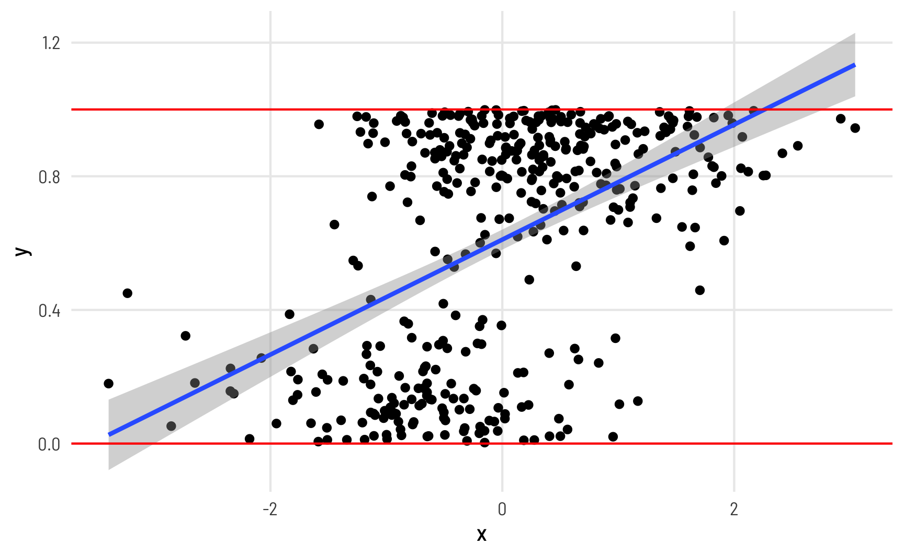
In the data I work with, it’s really common to come across data that’s measured as proportions: the percent of women in the public sector workforce, the amount of foreign aid a country receives as a percent of its GDP, the percent of religious organizations in a state’s nonprofit sector, and so on.
When working with this kind of data as an outcome variable (or dependent variable) in a model, analysis gets tricky if you use standard models like OLS regression. For instance, look at this imaginary simulated dataset of the relationship between some hypothetical x and y:
Y here is measured as a percentage and ranges between 0 and 1 (i.e. between the red lines), but the fitted line from a linear model creates predictions that exceed the 0–1 range (see the blue line in the top right corner). Since we’re thinking about proportions, we typically can’t exceed 0% and 100%, so it would be great if our modeling approach took those limits into account.
There are a bunch of different ways to model proportional data that vary substantially in complexity. In this post, I’ll explore four, but I’ll mostly focus on beta and zero-inflated beta regression:
- Linear probability models
- Fractional logistic regression
- Beta regression
- Zero-inflated beta regression
Throughout this example, we’ll use data from the Varieties of Democracy project (V-Dem) to answer a question common in comparative politics: do countries with parliamentary gender quotas (i.e. laws and regulations that require political parties to have a minimum proportion of women members of parliament (MPs)) have more women MPs in their respective parliaments? This question is inspired by existing research that looks at the effect of quotas on the proportion of women MPs, and a paper by Tripp and Kang (2008) was my first exposure to fractional logistic regression as a way to handle proportional data. The original data from that paper is available at Alice Kang’s website, but to simplify the post here, we won’t use it—we’ll just use a subset of equivalent data from V-Dem.
There’s a convenient R package for accessing V-Dem data, so we’ll use that to make a smaller panel of countries between 2010 and 2020. Let’s load all the libraries we need, clean up the data, and get started!
library(tidyverse) # ggplot, dplyr, %>%, and friends
library(brms) # Bayesian modeling through Stan
library(tidybayes) # Manipulate Stan objects in a tidy way
library(broom) # Convert model objects to data frames
library(broom.mixed) # Convert brms model objects to data frames
library(vdemdata) # Use data from the Varieties of Democracy (V-Dem) project
library(betareg) # Run beta regression models
library(extraDistr) # Use extra distributions like dprop()
library(ggdist) # Special geoms for posterior distributions
library(gghalves) # Special half geoms
library(ggbeeswarm) # Special distribution-shaped point jittering
library(ggrepel) # Automatically position labels
library(patchwork) # Combine ggplot objects
library(marginaleffects) # Calculate marginal effects for frequentist models
library(emmeans) # Calculate marginal effects in even fancier ways
library(modelsummary) # Create side-by-side regression tables
set.seed(1234) # Make everything reproducible
# Define the goodness-of-fit stats to include in modelsummary()
gof_stuff <- tribble(
~raw, ~clean, ~fmt,
"nobs", "N", 0,
"r.squared", "R²", 3
)
# Custom ggplot theme to make pretty plots
# Get the font at https://fonts.google.com/specimen/Barlow+Semi+Condensed
theme_clean <- function() {
theme_minimal(base_family = "Barlow Semi Condensed") +
theme(panel.grid.minor = element_blank(),
plot.title = element_text(family = "BarlowSemiCondensed-Bold"),
axis.title = element_text(family = "BarlowSemiCondensed-Medium"),
strip.text = element_text(family = "BarlowSemiCondensed-Bold",
size = rel(1), hjust = 0),
strip.background = element_rect(fill = "grey80", color = NA))
}
# Make labels use Barlow by default
update_geom_defaults("label_repel", list(family = "Barlow Semi Condensed"))V-Dem covers all countries since 1789 and includes hundreds of different variables. We’ll make a subset of some of the columns here and only look at years from 2010–2020. We’ll also make a subset of that and have a dataset for just 2015.
# Make a subset of the full V-Dem data
vdem_clean <- vdem %>%
select(country_name, country_text_id, year, region = e_regionpol_6C,
polyarchy = v2x_polyarchy, corruption = v2x_corr,
civil_liberties = v2x_civlib, prop_fem = v2lgfemleg, v2lgqugen) %>%
filter(year >= 2010, year < 2020) %>%
drop_na(v2lgqugen, prop_fem) %>%
mutate(quota = v2lgqugen > 0,
prop_fem = prop_fem / 100,
polyarchy = polyarchy * 100)
vdem_2015 <- vdem_clean %>%
filter(year == 2015) %>%
# Sweden and Denmark are tied for the highest polyarchy score (91.5), and R's
# max() doesn't deal with ties, so we cheat a little and add a tiny random
# amount of noise to each polyarchy score, mark the min and max of that
# perturbed score, and then remove that temporary column
mutate(polyarchy_noise = polyarchy + rnorm(n(), 0, sd = 0.01)) %>%
mutate(highlight = polyarchy_noise == max(polyarchy_noise) |
polyarchy_noise == min(polyarchy_noise)) %>%
select(-polyarchy_noise)Explore the data
Before trying to model this data, we’ll look at it really quick first. Here’s the distribution of prop_fem across the two different values of quota. In general, it seems that countries without a gender-based quota have fewer women MPs, which isn’t all that surprising, since quotas were designed to boost the number of women MPs in the first place.
quota_halves <- ggplot(vdem_2015, aes(x = quota, y = prop_fem)) +
geom_half_point(aes(color = quota),
transformation = position_quasirandom(width = 0.1),
side = "l", size = 0.5, alpha = 0.5) +
geom_half_boxplot(aes(fill = quota), side = "r") +
scale_fill_viridis_d(option = "plasma", end = 0.8) +
scale_color_viridis_d(option = "plasma", end = 0.8) +
guides(color = "none", fill = "none") +
labs(x = "Quota", y = "Proportion of women in parliament") +
theme_clean()
quota_densities <- ggplot(vdem_2015, aes(x = prop_fem, fill = quota)) +
geom_density(alpha = 0.6) +
scale_fill_viridis_d(option = "plasma", end = 0.8) +
labs(x = "Proportion of women in parliament", y = "Density", fill = "Quota") +
theme_clean() +
theme(legend.position = "bottom")
quota_halves | quota_densities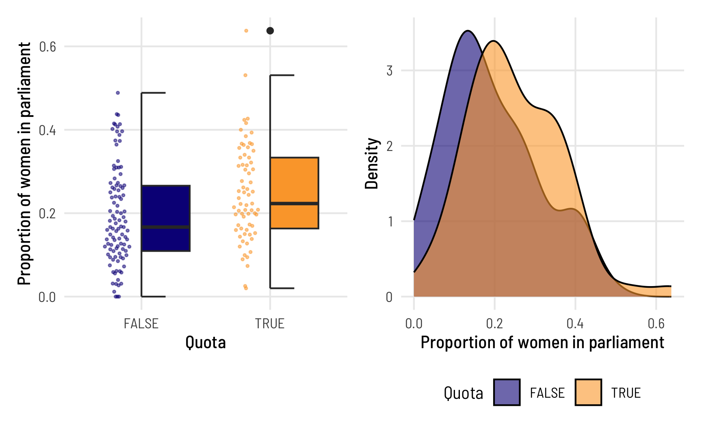
And here’s what the proportion of women MPs looks like across different levels of electoral democracy. V-Dem’s polyarchy index measures the extent of electoral democracy in different countries, incorporating measures of electoral, freedom of association, and universal suffrage, among other factors. It ranges from 0 to 1, but to make it easier to interpret in regression, we’ll multiply it by 100 so we can talk about unit changes in democracy. To help with the intuition of the index, we’ll highlight the countries with the minimum and maximum values of democracy. In general, the proportion of women MPs increases as democracy increases.
ggplot(vdem_2015, aes(x = polyarchy, y = prop_fem)) +
geom_point(aes(color = highlight), size = 1) +
geom_smooth(method = "lm") +
geom_label_repel(data = filter(vdem_2015, highlight == TRUE),
aes(label = country_name),
seed = 1234) +
scale_color_manual(values = c("grey30", "#FF4136"), guide = "none") +
labs(x = "Polyarchy (democracy)", y = "Proportion of women in parliament") +
theme_clean()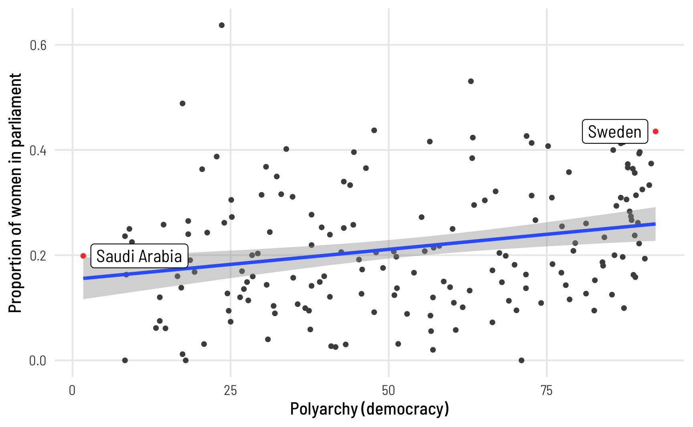
1: Linear probability models
In the world of econometrics, having the fitted regression line go outside the 0–1 range (like in the plot at the very beginning of this post) is totally fine and not a problem. Economists love to use a thing called a linear probability model (LPM) to model data like this, and for values that aren’t too extreme (generally if the outcome ranges between 0.2 and 0.8), the results from these weirdly fitting linear models are generally equivalent to fancier non-linear models. LPMs are even arguably best for experimental data. But it’s still a weird way to think about data and I don’t like them. As Alex Hayes says,
[T]he thing [LPM] is generally inconsistent and aesthetically offensive, but whatever, it works on occasion.
An LPM is really just regular old OLS applied to a binary or proportional outcome, so we’ll use trusty old lm().
# Linear probability models
model_ols1 <- lm(prop_fem ~ quota,
data = vdem_2015)
model_ols2 <- lm(prop_fem ~ polyarchy,
data = vdem_2015)
model_ols3 <- lm(prop_fem ~ quota + polyarchy,
data = vdem_2015)modelsummary(list(model_ols1, model_ols2, model_ols3),
gof_map = gof_stuff)| Model 1 | Model 2 | Model 3 | |
|---|---|---|---|
| (Intercept) | 0.193 | 0.154 | 0.128 |
| (0.011) | (0.021) | (0.021) | |
| quotaTRUE | 0.056 | 0.058 | |
| (0.018) | (0.018) | ||
| polyarchy | 0.001 | 0.001 | |
| (0.0003) | (0.0003) | ||
| N | 172 | 172 | 172 |
| R² | 0.052 | 0.060 | 0.117 |
Based on this, having a quota is associated with a 6 percentage point increase in the proportion of women MPs on average, and the coefficient is statistically significant. If we control for polyarchy, the effect changes to 6.3 percentage points. Great.
2: Fractional logistic regression
Logistic regression is normally used for binary outcomes, but surprisingly you can actually use it for proportional data too! This kind of model is called fractional logistic regression, and though it feels weird to use logistic regression with non-binary data, it’s legal! The Stata documentation actually recommends it, and there are tutorials (like this and this) papers about how to do it with Stata. This really in-depth post by Michael Clark shows several ways to run these models with R.
Basically use regular logistic regression with glm(..., family = binomial(link = "logit")) with an outcome variable that ranges from 0 to 1, and you’re done. R will give you a warning when you use family = binomial() with a non-binary outcome variable, but it will still work. If you want to suppress that warning, use family = quasibinomial() instead.
model_frac_logit1 <- glm(prop_fem ~ quota,
data = vdem_2015,
family = quasibinomial())
model_frac_logit2 <- glm(prop_fem ~ polyarchy,
data = vdem_2015,
family = quasibinomial())
model_frac_logit3 <- glm(prop_fem ~ quota + polyarchy,
data = vdem_2015,
family = quasibinomial())modelsummary(list(model_frac_logit1, model_frac_logit2, model_frac_logit3),
gof_map = gof_stuff)| Model 1 | Model 2 | Model 3 | |
|---|---|---|---|
| (Intercept) | −1.432 | −1.668 | −1.836 |
| (0.071) | (0.130) | (0.139) | |
| quotaTRUE | 0.325 | 0.344 | |
| (0.107) | (0.105) | ||
| polyarchy | 0.007 | 0.007 | |
| (0.002) | (0.002) | ||
| N | 172 | 172 | 172 |
Interpreting this model is a little more involved than interpreting OLS. The coefficients in logistic regression are provided on different scale than the original data. With OLS (and the linear probability model), coefficients show the change in the probability (or proportion in this case, since we’re working with proportion data) that is associated with a one-unit change in an explanatory variable. With logistic regression, coefficients show the change in the natural logged odds of the outcome, also known as “logits.”
This log odds scale is weird and not very intuitive normally, so often people will convert these log odds into odds ratios by exponentiating them. I’ve done this my whole statistical-knowing-and-doing life. If a model provides a coefficient of 0.4, you can exponentiate that with \(e^{0.4}\), resulting in an odds ratio of 1.49. You’d interpret this by saying something like “a one unit change in x increases the likelihood of y by 49%.” That sounds neat and soundbite-y and you see stuff like this all the time in science reporting. But thinking about percent changes in probability is still a weird way of thinking (though admittedly less non-intuitive than thinking about logits/logged odds).
For instance, here the coefficient for quota in Model 1 is 0.352. If we exponentiate that (\(e^{0.352}\)) we get 1.42. If our outcome were binary, we could say that having a quota makes it 42% more likely that the outcome would occur. But our outcome isn’t binary—it’s a proportion—so we need to think about changes in probabilities or proportions instead, and odds ratios make that really really hard.
Instead of odds ratios, we need to work directly with these logit-scale values. For a phenomenally excellent overview of binary logistic regression and how to interpret coefficients, see Steven Miller’s most excellent lab script here—because of that post I’m now far less afraid of dealing with logit-scale coefficients!
We can invert a logit value and convert it to a probability using the plogis() function in R. We’ll illustrate this a couple different ways, starting with a super simple intercept-only model:
model_frac_logit0 <- glm(prop_fem ~ 1,
data = vdem_2015,
family = quasibinomial())
tidy(model_frac_logit0)
## # A tibble: 1 × 5
## term estimate std.error statistic p.value
## <chr> <dbl> <dbl> <dbl> <dbl>
## 1 (Intercept) -1.29 0.0540 -24.0 1.24e-56
logit0_intercept <- model_frac_logit0 %>%
tidy() %>%
filter(term == "(Intercept)") %>%
pull(estimate)
# The intercept in logits. Who even knows what this means.
logit0_intercept
## [1] -1.29The intercept of this intercept-only model is -1.295 in logit units, whatever that means. We can convert this to a probability though:
# Convert logit to a probability (or proportion in this case)
plogis(logit0_intercept)
## [1] 0.215According to this probability/proportion, the average proportion of women MPs in the dataset is 0.215. Let’s see if that’s really the case:
mean(vdem_2015$prop_fem)
## [1] 0.215It’s the same! That’s so neat!
Inverting logit coefficients to probabilities gets a little trickier when there are multiple moving parts, though. With OLS, each coefficient shows the marginal change in the outcome for each unit change in the explanatory variable. With logistic regression, that’s not the case—we have to incorporate information from the intercept in order to get marginal effects.
For example, in Model 1, the log odds coefficient for quota is 0.352. If we invert that with plogis(), we end up with a really big number:
logit1_intercept <- model_frac_logit1 %>%
tidy() %>%
filter(term == "(Intercept)") %>%
pull(estimate)
logit1_quota <- model_frac_logit1 %>%
tidy() %>%
filter(term == "quotaTRUE") %>%
pull(estimate)
# Incorrect marginal effect of quota
plogis(logit1_quota)
## [1] 0.58If that were true, we could say that having a quota increases the proportion of women MPs by nearly 60%! But that’s wrong. We have to incorporate information from the intercept, as well as any other coefficients in the model, like so:
plogis(logit1_intercept + logit1_quota) - plogis(logit1_intercept)
## [1] 0.0556This is the effect of having a quota on the proportion of women MPs. Having a quota increases the proportion by about 6 percentage points, on average.
The math of combining these different logit coefficients and converting them to probabilities gets really tricky once there are more than one covariate, like in Model 3 here where we include both quota and polyarchy. Rather than try to figure out, we can instead calculate the marginal effects of specific variables while holding others constant. In practice this entails plugging a custom hypothetical dataset into our model and estimating the predicted values of the outcome. For instance, we can create a small dataset with just two rows: in one row, quota is FALSE and in the other quota is TRUE, while we hold polyarchy at its mean value. The marginaleffects package makes this really easy to do:
# Calculate the typical values for all variables in Model 3, except for quota,
# which we'll force to be FALSE and TRUE
data_to_predict <- typical(model = model_frac_logit3,
quota = c(FALSE, TRUE))
data_to_predict
## prop_fem polyarchy quota
## 1: 0.215 53.4 FALSE
## 2: 0.215 53.4 TRUENext we can use predictions() from the marginaleffects package to plug this data into Model 3 and figure out the fitted values for each of the rows:
# Plug this new dataset into the model
frac_logit_pred <- predictions(model_frac_logit3, newdata = data_to_predict)
frac_logit_pred
## rowid type predicted std.error statistic p.value conf.low conf.high prop_fem
## 1 1 response 0.190 0.0109 17.5 2.51e-68 0.169 0.212 0.215
## 2 2 response 0.249 0.0146 17.0 8.11e-65 0.221 0.279 0.215
## polyarchy quota
## 1 53.4 FALSE
## 2 53.4 TRUEThe predicted column here tells us the predicted or fitted value. When countries don’t have a quota, the average proportion of women MPs is 0.189; when they do have a quota, the average predicted proportion is 0.252. That’s a 0.063 percentage point difference, which is really similar to what we found from Model 1. We can plot these marginal effects too and see that the 6 percentage point difference is statistically significant:
ggplot(frac_logit_pred, aes(x = quota, y = predicted)) +
geom_pointrange(aes(ymin = conf.low, ymax = conf.high)) +
labs(x = "Quota", y = "Predicted proportion of women in parliament") +
theme_clean()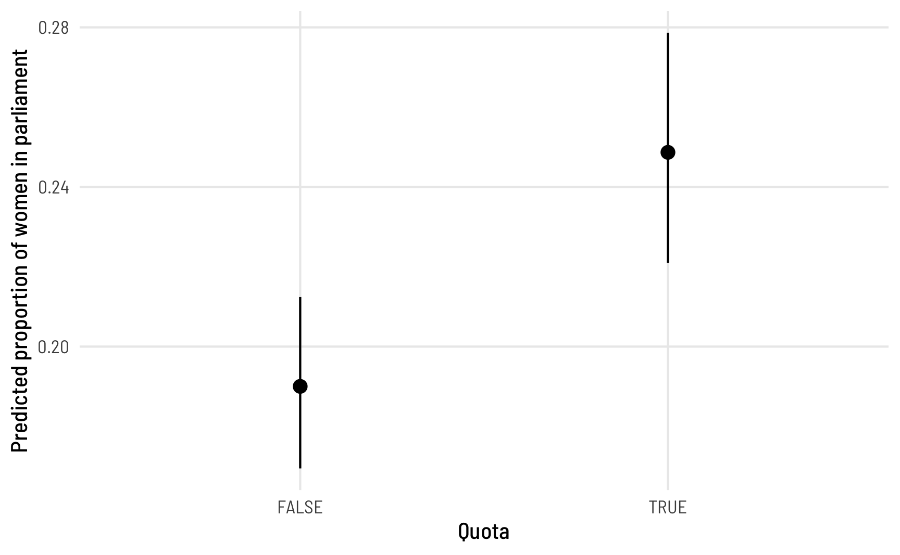
We can also compute marginal effects for polyarchy, holding quota at FALSE (its most common value) and ranging polyarchy from 0 to 100:
data_to_predict <- typical(model = model_frac_logit3,
polyarchy = seq(0, 100, by = 1))
frac_logit_pred <- predictions(model_frac_logit3,
newdata = data_to_predict)
ggplot(frac_logit_pred, aes(x = polyarchy, y = predicted)) +
geom_ribbon(aes(ymin = conf.low, ymax = conf.high),
alpha = 0.4, fill = "#480B6A") +
geom_line(size = 1, color = "#480B6A") +
labs(x = "Polyarchy (democracy)",
y = "Predicted proportion of women in parliament") +
theme_clean()
## Warning: Using `size` aesthetic for lines was deprecated in ggplot2 3.4.0.
## ℹ Please use `linewidth` instead.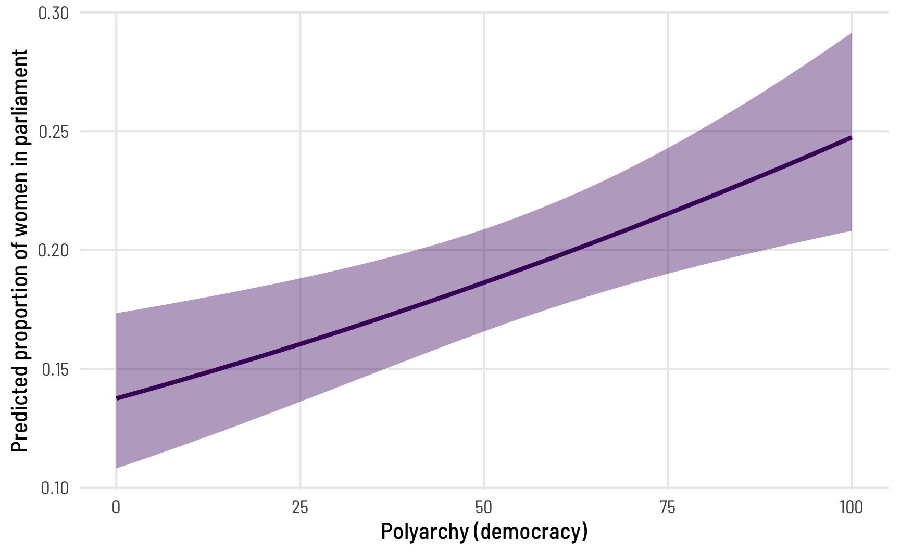
The predicted proportion of women MPs increases as democracy increases, which follows from the model results. But what’s the marginal effect of a one-unit increase in polyarchy? The coefficient from Model 3 was really small (0.007099 logits). We can convert this to a probability while correctly accounting for the intercept and all other coefficients with the marginaleffects() function:
marginaleffects(model_frac_logit3, variables = "polyarchy") %>%
tidy()
## type term estimate std.error statistic p.value conf.low conf.high
## 1 response polyarchy 0.00121 0.000348 3.47 0.000521 0.000526 0.00189The effect here is small: a one-unit change in polyarchy (i.e. moving from a 56 to a 57) is associated with a 0.00119 percentage point increase in the proportion of women MPs, on average. That’s not huge, but a one-unit change in polyarchy also isn’t huge. If a country moves 10 points from 56 to 66, for instance, there’d be a ≈10x increase in the effect (0.00119 * 10, or 0.012). This is apparent in the predicted proportion when polyarchy is set to 56 and 66: 0.2026564 - 0.1914267 = 0.011
marginaleffects(model_frac_logit3,
newdata = typical(polyarchy = c(56, 66)))
## rowid type term contrast dydx std.error statistic p.value conf.low
## 1 1 response quota TRUE - FALSE 0.05928 0.018411 3.22 0.001282 0.023199
## 2 2 response quota TRUE - FALSE 0.06165 0.019179 3.21 0.001306 0.024063
## 3 1 response polyarchy dY/dX 0.00113 0.000328 3.43 0.000602 0.000483
## 4 2 response polyarchy dY/dX 0.00118 0.000357 3.29 0.000992 0.000476
## conf.high predicted predicted_hi predicted_lo prop_fem quota polyarchy eps
## 1 0.09537 0.193 0.252 0.193 0.215 FALSE 56 NA
## 2 0.09925 0.205 0.266 0.205 0.215 FALSE 66 NA
## 3 0.00177 0.193 0.193 0.193 0.215 FALSE 56 0.00905
## 4 0.00188 0.205 0.205 0.205 0.215 FALSE 66 0.00905Finally, how do these fractional logistic regression coefficients compare to what we found with the linear probability model? We can look at them side-by-side:
modelsummary(list("OLS" = model_ols3,
"Fractional logit" = model_frac_logit3,
"Fractional logit<br>(marginal effects)" = marginaleffects(model_frac_logit3)),
gof_map = gof_stuff,
escape = FALSE)| OLS | Fractional logit | Fractional logit (marginal effects) |
|
|---|---|---|---|
| (Intercept) | 0.128 | −1.836 | |
| (0.021) | (0.139) | ||
| quotaTRUE | 0.058 | 0.344 | |
| (0.018) | (0.105) | ||
| polyarchy | 0.001 | 0.007 | 0.001 |
| (0.0003) | (0.002) | (0.0003) | |
| quota | 0.059 | ||
| (0.018) | |||
| N | 172 | 172 | 172 |
| R² | 0.117 |
They’re the same! Having a quota is associated with a 0.063 percentage point increase in the proportion of women MPs, on average, in both OLS and the fractional logit model. That’s so neat!
Interlude: The beta distribution and distributional regression
The OLS-based linear probability model works (begrudgingly), and fractional logistic regression works (but it feels kinda weird to use logistic regression on proportions like that). The third method we’ll explore is beta regression, which is a little different from linear regression. With regular old linear regression, we’re essentially fitting a line to data. We find an intercept, we find a slope, and we draw a line. We can add some mathematical trickery to make sure the line stays within specific bounds (like using logits and logged odds), but fundamentally everything just has intercepts and slopes.
An alternative to this kind of mean-focused regression is to use something called distributional regression (Kneib, Silbersdorff, and Säfken 2021) to estimate not lines and averages, but the overall shapes of statistical distributions.
Beta regression is one type of distributional regression, but before we explore how it works, we have to briefly review how distributions work.
In statistics, there are all sorts of probability distributions that can represent the general shape and properties of a variable (I have a whole guide for generating data using the most common distributions here). For instance, in a normal distribution, most of the values are clustered around a mean, and values are spread out based on some amount of variance, or standard deviation.
Here are two normal distributions defined by different means and standard deviations. One is centered at 5 with a fairly wide standard deviation of 4 (so 95% of its values range from 5 ± (4 × 1.96), or from −3ish to 13ish), while the other is centered at 10 with a narrower standard deviation of 2 (so 95% of its values range from 10 ± (2 × 1.96), or from 6 to 14):
ggplot(data = tibble(x = seq(-10, 20)), aes(x = x)) +
geom_function(fun = dnorm, args = list(mean = 5, sd = 4),
aes(color = "Normal(mean = 5, sd = 4)"), size = 1) +
geom_function(fun = dnorm, args = list(mean = 10, sd = 2),
aes(color = "Normal(mean = 10, sd = 2)"), size = 1) +
scale_color_viridis_d(option = "plasma", end = 0.8, name = "") +
theme_clean() +
theme(legend.position = "bottom")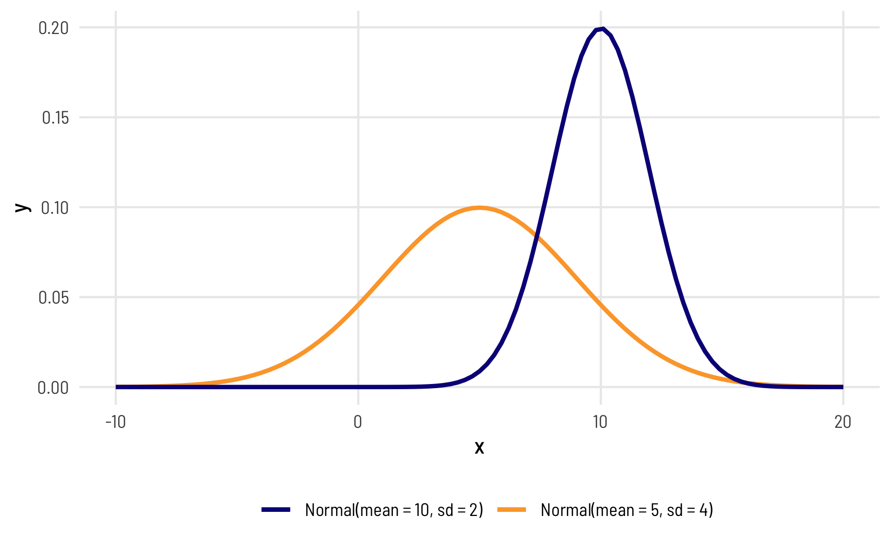
Most other distributions are defined in similar ways: there’s a central tendency (often the mean), and there’s some spread or variation around that center.
Beta distributions and shape parameters
One really common distribution that’s perfect for percentages and proportions is the beta distribution, which is naturally limited to numbers between 0 and 1 (but importantly doesn’t include 0 or 1). The beta distribution is an extremely flexible distribution and can take all sorts of different shapes and forms (stare at this amazing animated GIF for a while to see all the different shapes!)
{kind=link}
Unlike a normal distribution, where you use the mean and standard deviation as the distributional parameters, beta distributions take two non-intuitive parameters: (1) shape1 and (2) shape2, often abbreviated as \(a\) and \(b\). This answer at Cross Validated does an excellent job of explaining the intuition behind beta distributions and it’d be worth it to read it. Go do that—I’ll wait.
Basically beta distributions are good at modeling the probabilities of things, and shape1 and shape2 represent specific parts of a formula for probabilities and proportions.
Let’s say that there’s an exam with 10 points where most people score a 6/10. Another way to think about this is that an exam is a collection of correct answers and incorrect answers, and that the percent correct follows this equation:
\[ \frac{\text{Number correct}}{\text{Number correct} + \text{Number incorrect}} \]
If you scored a 6, you could write that as:
\[ \frac{6}{6+4} = \frac{6}{10} \]
To make this formula more general, we can use variable names: \(a\) for the number correct and \(b\) for the number incorrect, leaving us with this:
\[ \frac{a}{a + b} \]
In a beta distribution, the \(a\) and the \(b\) in that equation correspond to the shape1 and shape2 parameters. If we want to look at the distribution of scores for this test where most people get 6/10, or 60%, we can use 6 and 4 as parameters. Most people score around 60%, and the distribution isn’t centered—it’s asymmetric. Neat!
ggplot() +
geom_function(fun = dbeta, args = list(shape1 = 6, shape2 = 4),
aes(color = "Beta(shape1 = 6, shape2 = 4)"),
size = 1) +
scale_color_viridis_d(option = "plasma", name = "") +
theme_clean() +
theme(legend.position = "bottom")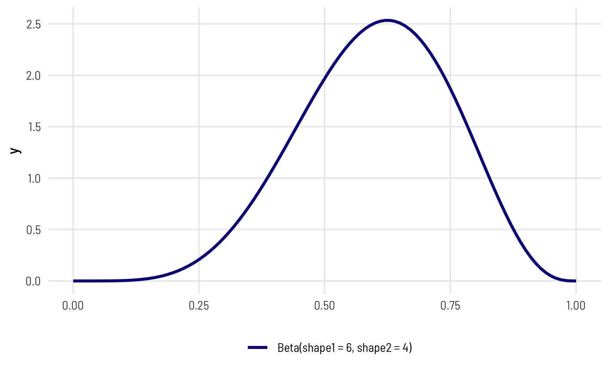
The magic of—and most confusing part about—beta distributions is that you can get all sorts of curves by just changing the shape parameters. To make this easier to see, we can make a bunch of different beta distributions.
ggplot() +
geom_function(fun = dbeta, args = list(shape1 = 6, shape2 = 4),
aes(color = "Beta(shape1 = 6, shape2 = 4)"),
size = 1) +
geom_function(fun = dbeta, args = list(shape1 = 60, shape2 = 40),
aes(color = "Beta(shape1 = 60, shape2 = 40)"),
size = 1) +
geom_function(fun = dbeta, args = list(shape1 = 9, shape2 = 1),
aes(color = "Beta(shape1 = 9, shape2 = 1)"),
size = 1) +
geom_function(fun = dbeta, args = list(shape1 = 2, shape2 = 11),
aes(color = "Beta(shape1 = 2, shape2 = 11)"),
size = 1) +
scale_color_viridis_d(option = "plasma", end = 0.8, name = "",
guide = guide_legend(nrow = 2)) +
theme_clean() +
theme(legend.position = "bottom")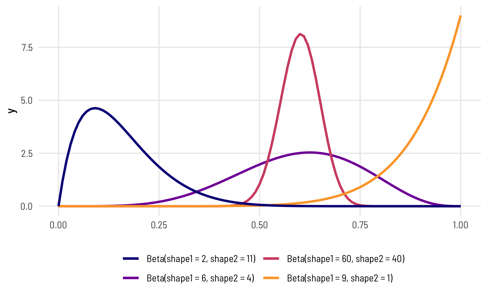
To figure out the center of each of these distributions, think of the \(\frac{a}{a+b}\) formula. For the blue distribution on the far left, for instance, it’s \(\frac{2}{2+11}\) or 0.154. The orange distribution on the far right is centered at \(\frac{9}{9+1}\), or 0.9. The tall pink-ish distribution is centered at 0.6 (\(\frac{60}{60+40}\)), just like the \(\frac{6}{6+4}\) distribution, but it’s much narrower and less spread out. When working with these two shape parameters, you control the variance or spread of the distribution by scaling the values up or down.
Mean and precision instead of shapes
But thinking about these shapes and manually doing the \(\frac{a}{a+b}\) calculation in your head is hard! It’s even harder to get a specific amount of spread. Most other distributions can be defined with a center and some amount of spread or variance, but with beta distributions you’re stuck with these weirdly interacting shape parameters.
Fortunately there’s an alternative way of parameterizing the beta distribution that uses a mean \(\mu\) and precision \(\phi\) (the same idea as variance) instead of these strange shapes.
These shapes and the \(\mu\) and \(\phi\) parameters are mathematically related and interchangeable. Formally, the two shapes can be defined using \(\mu\) and \(\phi\) like so:
\[ \begin{aligned} \text{shape1 } (a) &= \mu \times \phi \\ \text{shape2 } (b) &= (1 - \mu) \times \phi \end{aligned} \]
Based on this, we can do some algebra to figure out how to write \(\mu\) and \(\phi\) using \(a\) and \(b\):
\[ \begin{equation} \begin{aligned}[t] &\text{[get } \phi \text{ alone]} \\ \mu \times \phi &= a \\ \phi &= \frac{a}{\mu} \end{aligned} \qquad \begin{aligned}[t] &\text{[solve for } \mu \text{]} \\ b &= (1 - \mu) \times \phi \\ b &= (1 - \mu) \times \frac{a}{\mu} \\ b &= \frac{a}{\mu} - \frac{a \mu}{\mu} \\ b &= \frac{a}{\mu} - a \\ a + b &= \frac{a}{\mu} \\ \color{orange}{\mu} &\color{orange}{= \frac{a}{a + b}} \end{aligned} \qquad \begin{aligned}[t] &\text{[solve for } \phi \text{]} \\ a &= \mu \times \phi \\ a &= \left( \frac{a}{a + b} \right) \times \phi \\ a &= \frac{a \phi}{a + b} \\ (a + b) a &= a \phi \\ a^2 + ba &= a \phi \\ \color{orange}{\phi} &\color{orange}{= a + b} \end{aligned} \end{equation} \]
It’s thus possible to translate between these two parameterizations:
\[ \begin{equation} \begin{aligned}[t] \text{Shape 1:} && a &= \mu \phi \\ \text{Shape 2:} && b &= (1 - \mu) \phi \end{aligned} \qquad\qquad\qquad \begin{aligned}[t] \text{Mean:} && \mu &= \frac{a}{a + b} \\ \text{Precision:} && \phi &= a + b \end{aligned} \end{equation} \]
To help with the intuition, we can make a couple little functions to switch between them.
shapes_to_muphi <- function(shape1, shape2) {
mu <- shape1 / (shape1 + shape2)
phi <- shape1 + shape2
return(list(mu = mu, phi = phi))
}
muphi_to_shapes <- function(mu, phi) {
shape1 <- mu * phi
shape2 <- (1 - mu) * phi
return(list(shape1 = shape1, shape2 = shape2))
}Remember our initial distribution where shape1 was 6 and shape2 was 4? Here’s are the parameters for that using \(\mu\) and \(\phi\) instead:
shapes_to_muphi(6, 4)
## $mu
## [1] 0.6
##
## $phi
## [1] 10It has a mean of 0.6 and a precision of 10. That more precise and taller distribution where shape1 was 60 and shape2 was 40?
shapes_to_muphi(60, 40)
## $mu
## [1] 0.6
##
## $phi
## [1] 100It has the same mean of 0.6, but a much higher precision (100 now instead of 10).
R has built-in support for the shape-based beta distribution with things like dbeta(), rbeta(), etc. We can work with this reparameterized \(\mu\)- and \(\phi\)-based beta distribution using the dprop() (and rprop(), etc.) from the extraDistr package. It takes two arguments: size for \(\phi\) and mean for \(\mu\).
beta_shapes <- ggplot() +
geom_function(fun = dbeta, args = list(shape1 = 6, shape2 = 4),
aes(color = "dbeta(shape1 = 6, shape2 = 4)"),
size = 1) +
geom_function(fun = dbeta, args = list(shape1 = 60, shape2 = 40),
aes(color = "dbeta(shape1 = 60, shape2 = 40)"),
size = 1) +
geom_function(fun = dbeta, args = list(shape1 = 9, shape2 = 1),
aes(color = "dbeta(shape1 = 9, shape2 = 1)"),
size = 1) +
geom_function(fun = dbeta, args = list(shape1 = 2, shape2 = 11),
aes(color = "dbeta(shape1 = 2, shape2 = 11)"),
size = 1) +
scale_color_viridis_d(option = "plasma", end = 0.8, name = "",
guide = guide_legend(ncol = 1)) +
labs(title = "Shape-based beta distributions") +
theme_clean() +
theme(legend.position = "bottom")
beta_mu_phi <- ggplot() +
geom_function(fun = dprop, args = list(mean = 0.6, size = 10),
aes(color = "dprop(mean = 0.6, size = 10)"),
size = 1) +
geom_function(fun = dprop, args = list(mean = 0.6, size = 100),
aes(color = "dprop(mean = 0.6, size = 100)"),
size = 1) +
geom_function(fun = dprop, args = list(mean = 0.9, size = 10),
aes(color = "dprop(mean = 0.9, size = 10)"),
size = 1) +
geom_function(fun = dprop, args = list(mean = 0.154, size = 13),
aes(color = "dprop(mean = 0.154, size = 13)"),
size = 1) +
scale_color_viridis_d(option = "plasma", end = 0.8, name = "",
guide = guide_legend(ncol = 1)) +
labs(title = "Mean- and precision-based beta distributions") +
theme_clean() +
theme(legend.position = "bottom")
beta_shapes | beta_mu_phi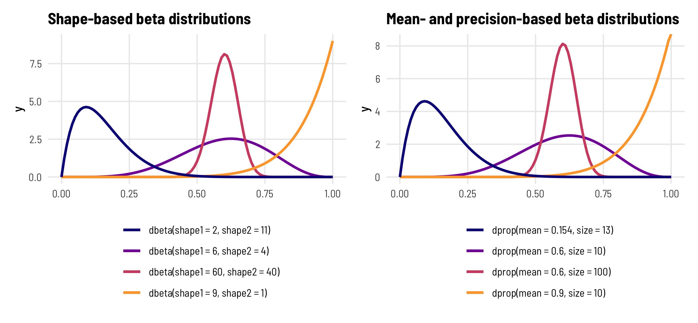
Phew. That’s a lot of background to basically say that you don’t have to think about the shape parameters for beta distributions—you can think of mean (\(\mu\)) and precision (\(\phi\)) instead, just like you do with a normal distribution and its mean and standard deviation.
3a: Beta regression
So, with that quick background on how beta distributions work, we can now explore how beta regression lets us model outcomes that range between 0 and 1. Again, beta regression is a distributional regression, which means we’re ultimately modeling \(\mu\) and \(\phi\) and not just a slope and intercept. With this regression, we’ll be able to fit separate models for both parameters and see how the overall distribution shifts based on different covariates.
The betareg package provides the betareg() function for doing frequentist beta regression. For the sake of simplicity, we’ll just look at prop_fem ~ quota and ignore polyarchy for a bit.
The syntax is just like all other formula-based regression functions, but with an added bit: the first part of the equation (prop_fem ~ quota) models the mean, or \(\mu\), while anything that comes after a | in the formula will explain variation in the precision, or \(\phi\).
Let’s try it out!
model_beta <- betareg(prop_fem ~ quota | quota,
data = vdem_2015,
link = "logit")
## Error in betareg(prop_fem ~ quota | quota, data = vdem_2015, link = "logit"): invalid dependent variable, all observations must be in (0, 1)Oh no! We have an error. Beta regression can only handle outcome values that range between 0 and 1—it cannot deal with values that are exactly 0 or exactly 1.
We’ll show how to deal with 0s and 1s later. For now we can do some trickery and add 0.001 to all the 0s so that they’re not actually 0. This is cheating, but it’s fine for now :)
vdem_2015_fake0 <- vdem_2015 %>%
mutate(prop_fem = ifelse(prop_fem == 0, 0.001, prop_fem))
model_beta <- betareg(prop_fem ~ quota | quota,
data = vdem_2015_fake0,
link = "logit")
tidy(model_beta)
## # A tibble: 4 × 6
## component term estimate std.error statistic p.value
## <chr> <chr> <dbl> <dbl> <dbl> <dbl>
## 1 mean (Intercept) -1.45 0.0837 -17.4 1.41e-67
## 2 mean quotaTRUE 0.343 0.114 3.01 2.57e- 3
## 3 precision (Intercept) 2.07 0.137 15.1 1.64e-51
## 4 precision quotaTRUE 0.422 0.215 1.96 4.98e- 2Interpreting coefficients
We now have two sets of coefficients, one set for each parameter (the mean and precision). The parameters for the mean are measured on the logit scale, just like with logistic regression previously, and we can calculate the marginal effect of having a quota by using plogis() and piecing together the coefficient and the intercept:
beta_mu_intercept <- model_beta %>%
tidy() %>%
filter(component == "mean", term == "(Intercept)") %>%
pull(estimate)
beta_mu_quota <- model_beta %>%
tidy() %>%
filter(component == "mean", term == "quotaTRUE") %>%
pull(estimate)
plogis(beta_mu_intercept + beta_mu_quota) - plogis(beta_mu_intercept)
## [1] 0.0582Having a quota thus increases the average of the distribution of women MPs by 5.822 percentage points, on average. That’s the same value that we found with OLS and with fractional logistic regression!
Working with the precision parameter
But what about those precision parameters—what can we do with those? For mathy reasons, these are not measured on a logit scale. Instead, they’re logged values. We can invert them by exponentiating them with exp().
The phi intercept represents the precision of the distribution of the proportion of women MPs in countries without a quota, while the phi coefficient for quota represents the change in that precision when quota is TRUE. That means we have all the parameters to draw two different distributions of our outcome, split by whether countries have quotas. Let’s plot these two predicted distributions on top of the true underlying data and see how well they fit:
beta_phi_intercept <- model_beta %>%
tidy() %>%
filter(component == "precision", term == "(Intercept)") %>%
pull(estimate)
beta_phi_quota <- model_beta %>%
tidy() %>%
filter(component == "precision", term == "quotaTRUE") %>%
pull(estimate)
no_quota_title <- paste0("dprop(mean = plogis(", round(beta_mu_intercept, 2),
"), size = exp(", round(beta_phi_intercept, 2), "))")
quota_title <- paste0("dprop(mean = plogis(", round(beta_mu_intercept, 2),
" + ", round(beta_mu_quota, 2),
"), size = exp(", round(beta_phi_intercept, 2),
" + ", round(beta_phi_quota, 2), "))")
ggplot(data = tibble(x = 0:1), aes(x = x)) +
geom_density(data = vdem_2015_fake0,
aes(x = prop_fem, fill = quota), alpha = 0.5, color = NA) +
stat_function(fun = dprop, size = 1,
args = list(size = exp(beta_phi_intercept),
mean = plogis(beta_mu_intercept)),
aes(color = no_quota_title)) +
stat_function(fun = dprop, size = 1,
args = list(size = exp(beta_phi_intercept + beta_phi_quota),
mean = plogis(beta_mu_intercept + beta_mu_quota)),
aes(color = quota_title)) +
scale_fill_viridis_d(option = "plasma", end = 0.8, name = "Quota",
guide = guide_legend(ncol = 1, order = 1)) +
scale_color_viridis_d(option = "plasma", end = 0.8, direction = -1, name = "",
guide = guide_legend(reverse = TRUE, ncol = 1, order = 2)) +
labs(x = "Proportion of women in parliament") +
theme_clean() +
theme(legend.position = "bottom")
Note how the whole distribution changes when there’s a quota. The mean doesn’t just shift rightward—the precision of the distribution changes too and the distribution where quota is TRUE has a whole new shape. The model actually captures it really well too! Look at how closely the predicted orange line aligns with the the underlying data. The blue predicted line is a little off, but that’s likely due to the 0s that we cheated with.
You don’t have to model the \(\phi\) if you don’t want to. A model like this will work just fine too:
model_beta_no_phi <- betareg(prop_fem ~ quota,
data = vdem_2015_fake0,
link = "logit")
tidy(model_beta_no_phi)
## # A tibble: 3 × 6
## component term estimate std.error statistic p.value
## <chr> <chr> <dbl> <dbl> <dbl> <dbl>
## 1 mean (Intercept) -1.49 0.0768 -19.4 1.41e-83
## 2 mean quotaTRUE 0.411 0.111 3.69 2.20e- 4
## 3 precision (phi) 9.25 0.976 9.47 2.73e-21In this case, you still get a precision component, but it’s universal across all the different coefficients—it doesn’t vary across quota (or any other variables, had we included any others in the model). Also, for whatever mathy reasons, when you don’t explicitly model the precision, the resulting coefficient in the table isn’t on the log scale—it’s a regular non-logged number, so there’s no need to exponentiate. We can plot the two distributions like before. The mean part is all the same! The only difference now is that phi is constant across the two groups
beta_phi <- model_beta_no_phi %>%
tidy() %>%
filter(component == "precision") %>%
pull(estimate)
no_quota_title <- paste0("dprop(mean = plogis(", round(beta_mu_intercept, 2),
"), size = ", round(beta_phi, 2), ")")
quota_title <- paste0("dprop(mean = plogis(", round(beta_mu_intercept, 2),
" + ", round(beta_mu_quota, 2),
"), size = ", round(beta_phi, 2), ")")
ggplot(data = tibble(x = 0:1), aes(x = x)) +
geom_density(data = vdem_2015_fake0,
aes(x = prop_fem, fill = quota), alpha = 0.5, color = NA) +
stat_function(fun = dprop, size = 1,
args = list(size = beta_phi,
mean = plogis(beta_mu_intercept)),
aes(color = no_quota_title)) +
stat_function(fun = dprop, size = 1,
args = list(size = beta_phi,
mean = plogis(beta_mu_intercept + beta_mu_quota)),
aes(color = quota_title)) +
scale_fill_viridis_d(option = "plasma", end = 0.8, name = "Quota",
guide = guide_legend(ncol = 1, order = 1)) +
scale_color_viridis_d(option = "plasma", end = 0.8, direction = -1, name = "",
guide = guide_legend(reverse = TRUE, ncol = 1, order = 2)) +
labs(x = "Proportion of women in parliament") +
theme_clean() +
theme(legend.position = "bottom")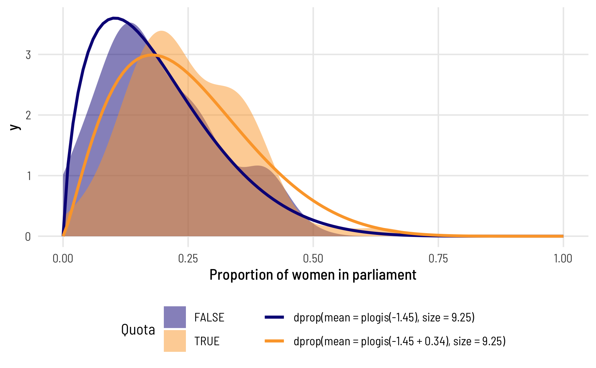
Again, the means are the same, so the average difference between having a quota and not having a quota is the same, but because the precision is constant, the distributions don’t fit the data as well.
Average marginal effects
Because beta regression coefficients are all in logit units (with the exception of the \(\phi\) part), we can interpret their marginal effects just like we did with logistic regression. It’s tricky to piece together all the different parts and feed them through plogis(), so it’s best to calculate the marginal effects with hypothetical data as before.
marginaleffects(model_beta,
newdata = typical(quota = c(FALSE, TRUE)))
## rowid type term contrast dydx std.error statistic p.value conf.low conf.high
## 1 1 response quota TRUE - FALSE 0.0582 0.0192 3.03 0.00248 0.0205 0.0959
## 2 2 response quota TRUE - FALSE 0.0582 0.0192 3.03 0.00248 0.0205 0.0959
## predicted predicted_hi predicted_lo prop_fem quota
## 1 0.189 0.248 0.189 0.215 FALSE
## 2 0.248 0.248 0.189 0.215 TRUEAfter incorporating all the moving parts of the model, we find that having a quota is associated with an increase of 6.37 percentage points of the proportion of women MPs, on average, which is what we found earlier by piecing together the intercept and coefficient. If we had more covariates, this marginaleffects() result would be necessary, since it’s tricky to incorporate all the different model pieces by hand.
Sadly, notice how the results from marginaleffects() don’t include confidence intervals. For whatever reason, betareg objects don’t provide standard errors when making predictions, by design. We have a std.error column here because marginaleffects() did something separately behind the scenes to get it, but had we just used predict() or broom::augment() instead, we’d get an estimate and that’s all.
augment(model_beta, newdata = tibble(quota = c(FALSE, TRUE)))
## # A tibble: 2 × 2
## quota .fitted
## <lgl> <dbl>
## 1 FALSE 0.189
## 2 TRUE 0.2483b: Beta regression, Bayesian style
Not having standard errors and confidence intervals with betareg() is kind of a bummer. Uncertainty is wonderful. We’re working with distributions already with distributional regression like beta regression—it would be great if we could quantify our uncertainty more systematically.
Fortunately Bayesian regression lets us do just that. We can generate thousands of plausible estimates based on the combination of our prior beliefs and the likelihood of the data, and then we can explore the uncertainty and the distributions of all those estimates. Instead of trying to figure out the math behind precise betareg() standard errors (which the authors haven’t even done, since it’s hard!), we’ll brute-force our way there with simulation.
We’ll also get to interpret the results Bayesianly. Goodbye confidence intervals; hello credible intervals.
The incredible brms package has built-in support for beta regression. I won’t go into details here about how to use brms—there are all sorts of tutorials and examples online for that (here’s a quick basic one).
Let’s recreate the model we made with betareg() earlier, but now with a Bayesian flavor. The formula syntax is a little different with brms. Instead of using | to divide the \(\mu\) part from the \(\phi\) part, we specify two separate formulas: one for prop_fem for the \(\mu\) part, and one for phi for the \(\phi\) part. We’ll use the default priors here (but in real life, you’d want to set them to something sensible), and we’ll generate 4000 Monte Carlo Markov Chain (MCMC) samples across 4 chains.
model_beta_bayes <- brm(
bf(prop_fem ~ quota,
phi ~ quota),
data = vdem_2015_fake0,
family = Beta(),
chains = 4, iter = 2000, warmup = 1000,
cores = 4, seed = 1234,
# Use the cmdstanr backend for Stan because it's faster and more modern than
# the default rstan You need to install the cmdstanr package first
# (https://mc-stan.org/cmdstanr/) and then run cmdstanr::install_cmdstan() to
# install cmdstan on your computer.
backend = "cmdstanr"
)
## Start samplingCheck out the results—they’re the same that we found with betareg(), only now we have uncertainty for each of the estimates.
tidy(model_beta_bayes, effects = "fixed")
## # A tibble: 4 × 7
## effect component term estimate std.error conf.low conf.high
## <chr> <chr> <chr> <dbl> <dbl> <dbl> <dbl>
## 1 fixed cond (Intercept) -1.45 0.0851 -1.61 -1.28
## 2 fixed cond phi_(Intercept) 2.05 0.135 1.78 2.31
## 3 fixed cond quotaTRUE 0.343 0.113 0.118 0.559
## 4 fixed cond phi_quotaTRUE 0.417 0.215 0.00222 0.837Working with the posterior
We have a complete posterior distribution for each coefficient, which we can visualize in neat ways:
posterior_beta <- model_beta_bayes %>%
gather_draws(`b_.*`, regex = TRUE) %>%
mutate(component = ifelse(str_detect(.variable, "phi_"), "Precision", "Mean"),
intercept = str_detect(.variable, "Intercept"))
ggplot(posterior_beta, aes(x = .value, y = fct_rev(.variable), fill = component)) +
geom_vline(xintercept = 0) +
stat_halfeye(aes(slab_alpha = intercept),
.width = c(0.8, 0.95), point_interval = "median_hdi") +
scale_fill_viridis_d(option = "viridis", end = 0.6) +
scale_slab_alpha_discrete(range = c(1, 0.4)) +
guides(fill = "none", slab_alpha = "none") +
labs(x = "Coefficient", y = "Variable",
caption = "80% and 95% credible intervals shown in black") +
facet_wrap(vars(component), ncol = 1, scales = "free_y") +
theme_clean()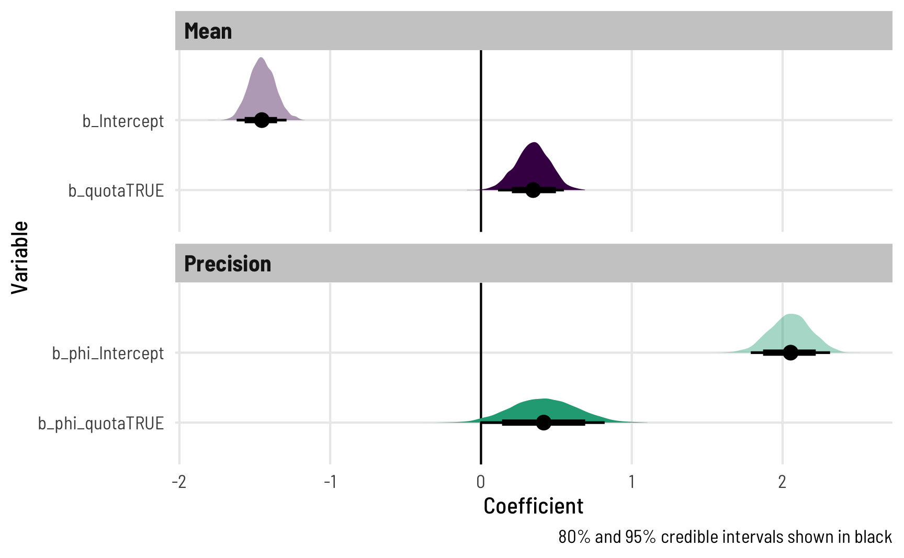
That shows the coefficients in their transformed scale (logits for the mean, logs for the precision), but we can transform them to the response scale too by feeding the \(\phi\) parts to exp() and the \(\mu\) parts to plogis():
model_beta_bayes %>%
spread_draws(`b_.*`, regex = TRUE) %>%
mutate(across(starts_with("b_phi"), ~exp(.))) %>%
mutate(across((!starts_with(".") & !starts_with("b_phi")), ~plogis(.))) %>%
gather_variables() %>%
median_hdi()
## # A tibble: 4 × 7
## .variable .value .lower .upper .width .point .interval
## <chr> <dbl> <dbl> <dbl> <dbl> <chr> <chr>
## 1 b_Intercept 0.189 0.165 0.216 0.95 median hdi
## 2 b_phi_Intercept 7.79 5.91 10.0 0.95 median hdi
## 3 b_phi_quotaTRUE 1.52 0.974 2.24 0.95 median hdi
## 4 b_quotaTRUE 0.586 0.528 0.634 0.95 median hdiBut beyond the intercepts here, this isn’t actually that helpful. The back-transformed intercept for the \(\mu\) part of the regression is 0.188, which means countries without a quota have an average proportion of women MPs of 18.8%. That’s all fine. The quota effect here, though, is 0.592. That does not mean that having a quota increases the proportion of women by 59 percentage points! In order to find the marginal effect of having a quota, we need to also incorporate the intercept. Remember when we ran plogis(intercept + coefficient) - plogis(intercept) earlier? We have to do that again.
Posterior average marginal effects
Binary predictor
Once again, the math for combining these coefficients can get hairy, especially when we’re working with more than one explanatory variable, so instead of figuring out that math, we’ll calculate the marginal effects across different values of quota.
The marginaleffects package doesn’t work with brms models (and there are no plans to add support for it), but the powerful emmeans package does, so we’ll use that. The syntax is a little different, but the documentation for emmeans is really complete and helpful. This website also has a bunch of worked out examples.
We can calculate the pairwise marginal effects across different values of quota, which conveniently shows us the difference, or the marginal effect of having a quota:
emmeans(model_beta_bayes, ~ quota,
regrid = "response") %>%
contrast(method = "revpairwise")
## contrast estimate lower.HPD upper.HPD
## TRUE - FALSE 0.0585 0.0197 0.0945
##
## Point estimate displayed: median
## HPD interval probability: 0.95This summary information is helpful—we have our difference in predicted outcomes of 0.0636, which is roughly what we found in earlier models. We also have a 95% highest posterior density interval for the difference.
But it would be great if we could visualize these predictions! What do the posteriors for quota and non-quota countries look like, and what does the distribution of differences look like? We can work with the original model and MCMC chains to visualize this, letting brms take care of the hard work of predicting the coefficients we need and back-transforming them into probabilities.
We’ll use epred_draws() from tidybayes to plug in a hypothetical dataset and generate predictions, as we did with previous models. Only this time, instead of getting a single predicted value for each level of quota, we’ll get 4,000. The epred_draws() (like all tidybayes functions) returns a long tidy data frame, so it’s really easy to plot with ggplot:
# Plug a dataset where quota is FALSE and TRUE into the model
beta_bayes_pred <- model_beta_bayes %>%
epred_draws(newdata = tibble(quota = c(FALSE, TRUE)))
ggplot(beta_bayes_pred, aes(x = .epred, y = quota, fill = quota)) +
stat_halfeye(.width = c(0.8, 0.95), point_interval = "median_hdi") +
scale_fill_viridis_d(option = "plasma", end = 0.8) +
guides(fill = "none") +
labs(x = "Predicted proportion of women in parliament", y = NULL,
caption = "80% and 95% credible intervals shown in black") +
theme_clean()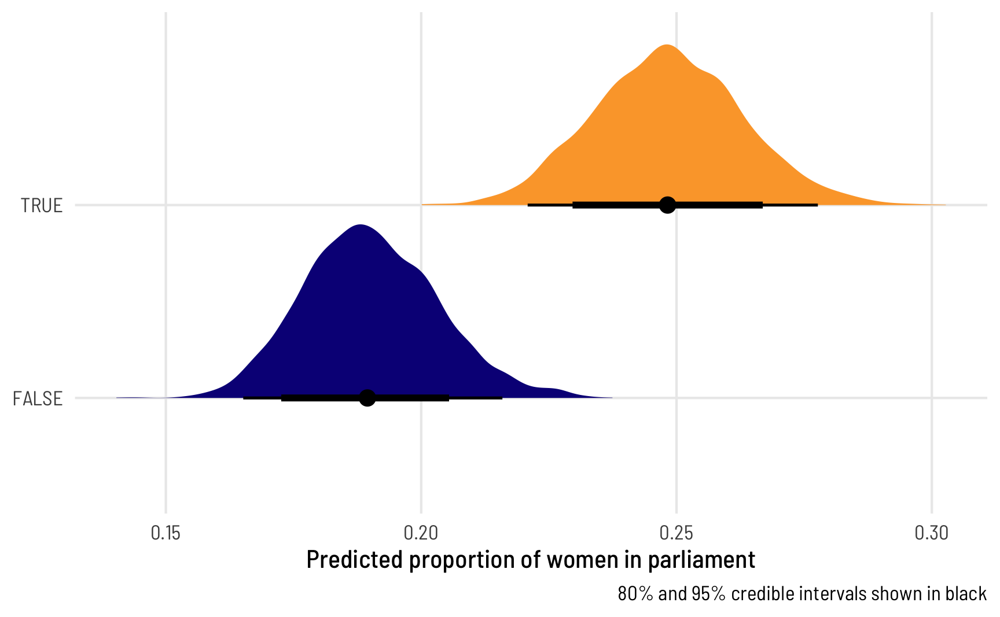
That’s super neat! We can easily see that countries with quotas have a higher predicted proportion of women in parliament, and we can see the uncertainty in those estimates. We can also work with these posterior predictions to calculate the difference in proportions, or the marginal effect of having a quota, which is the main thing we’re interested in.
Because the predicted data is currently long, we need to make it wider so that there are separate columns for TRUE and FALSE predictions. Then we can make a new column that calculates the difference and plot that:
beta_bayes_pred_wide <- beta_bayes_pred %>%
ungroup() %>%
select(-.row) %>%
pivot_wider(names_from = "quota", values_from = ".epred") %>%
mutate(quota_effect = `TRUE` - `FALSE`)
ggplot(beta_bayes_pred_wide, aes(x = quota_effect)) +
stat_halfeye(.width = c(0.8, 0.95), point_interval = "median_hdi",
fill = "#bc3032") +
labs(x = "Average marginal effect of having a gender-based\nquota on the proportion of women in parliament",
y = NULL, caption = "80% and 95% credible intervals shown in black") +
theme_clean()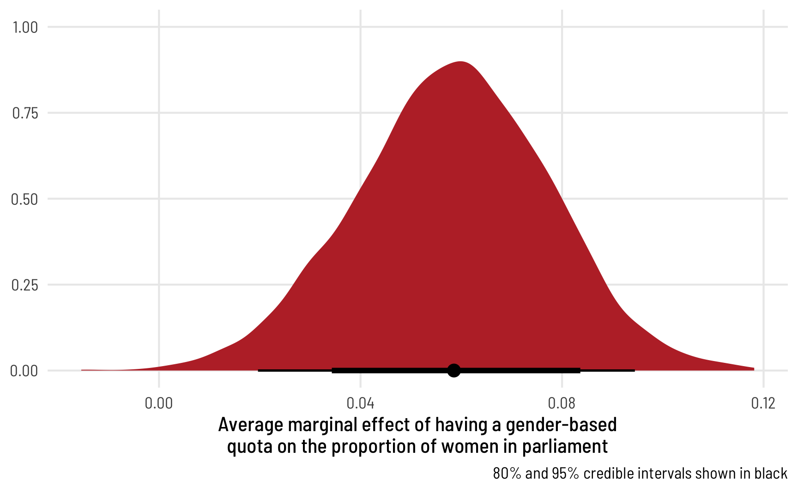
Perfect! The median marginal effect of having a quota is 6 percentage points, but it can range from 2 to 10.
Continuous predictor
The same approach works for continuous predictors too, just like with previous methods. Let’s build a model that explains both the mean and the precision with quota and polyarchy. We don’t necessarily have to model the precision with the same variables that we use for the mean—that can be a completely separate process—but we’ll do it just for fun.
# We need to specify inits here because the beta precision parameter can never
# be negative, but Stan will generate random initial values from -2 to 2, even
# for beta's precision, which leads to rejected chains and slower performance.
# For even fancier init handling, see Solomon Kurz's post here:
# https://solomonkurz.netlify.app/post/2021-06-05-don-t-forget-your-inits/
model_beta_bayes_1 <- brm(
bf(prop_fem ~ quota + polyarchy,
phi ~ quota + polyarchy),
data = vdem_2015_fake0,
family = Beta(),
inits = "0",
chains = 4, iter = 2000, warmup = 1000,
cores = 4, seed = 1234,
backend = "cmdstanr"
)
## Warning: Argument 'inits' is deprecated. Please use argument 'init' instead.
## Start samplingWe’ll forgo interpreting all these different coefficients, since we’d need to piece together the different parts and back-transform them with either plogis() (for the \(\mu\) parts) or exp() (for the \(\phi\) parts). Instead, we’ll skip to the marginal effect of polyarchy on the proportion of women MPs. First we can look at the posterior prediction of the outcome across the whole range of democracy scores:
# Use a dataset where quota is FALSE and polyarchy is a range
beta_bayes_pred_1 <- model_beta_bayes_1 %>%
epred_draws(newdata = expand_grid(quota = FALSE,
polyarchy = seq(0, 100, by = 1)))
ggplot(beta_bayes_pred_1, aes(x = polyarchy, y = .epred)) +
stat_lineribbon() +
scale_fill_brewer(palette = "Purples") +
labs(x = "Polyarchy (democracy)", y = "Predicted proportion of women MPs",
fill = "Credible interval") +
theme_clean() +
theme(legend.position = "bottom")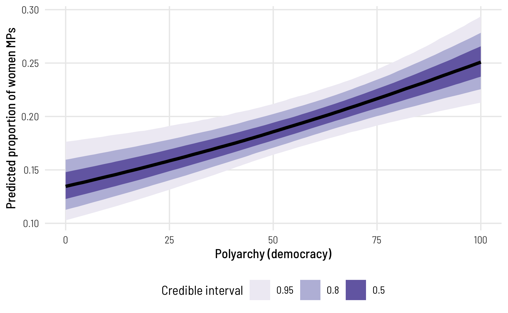
The predicted proportion of women MPs increases as democracy increases, as we’ve seen before. Note how the slope here isn’t constant, though—the line is slightly curved. That’s because this is a nonlinear regression model, making it so the marginal effect of democracy is different depending on its level. We can see this if we look at the instantaneous slope (or first derivative) at different values of polyarchy. emmeans makes this really easy with the emtrends() function. If we ask it for the slope of the line, it will provide it at the average value of polyarchy, or 53.5:
emtrends(model_beta_bayes_1, ~ polyarchy, var = "polyarchy",
regrid = "response")
## polyarchy polyarchy.trend lower.HPD upper.HPD
## 53.4 0.0013 0.000618 0.00204
##
## Results are averaged over the levels of: quota
## Point estimate displayed: median
## HPD interval probability: 0.95We can also see the overall average trend if we use ~ 1 instead of ~ polyarchy:
emtrends(model_beta_bayes_1, ~ 1, var = "polyarchy",
regrid = "response")
## 1 polyarchy.trend lower.HPD upper.HPD
## overall 0.0013 0.000618 0.00204
##
## Results are averaged over the levels of: quota
## Point estimate displayed: median
## HPD interval probability: 0.95Our effect is thus 0.00124, or 0.124 percentage points, but only for countries in the middle range of polyarchy. The slope is shallower and steeper depending on the level of democracy. We can check the slope (or effect) at different hypothetical levels:
emtrends(model_beta_bayes_1, ~ polyarchy, var = "polyarchy",
at = list(polyarchy = c(20, 50, 80)),
regrid = "response")
## polyarchy polyarchy.trend lower.HPD upper.HPD
## 20 0.00111 0.000579 0.00159
## 50 0.00128 0.000618 0.00200
## 80 0.00145 0.000585 0.00234
##
## Results are averaged over the levels of: quota
## Point estimate displayed: median
## HPD interval probability: 0.95Neat! For observations with low democracy scores like 20, a one-unit increase in polyarchy is associated with a 0.107 percentage point increase in the proportion of women MPs, while countries with high scores like 80 see a 0.137 percentage point increase.
We can visualize the distribution of these marginal effects too by using emtrends() to calculate the instantaneous slopes across all the MCMC chains, and then using gather_emmeans_draws() from tidybayes to convert these marginal effects into tidy data.
(Side note: You could technically do this without emmeans. The way emmeans calculates the instantaneous slope is by finding the predicted average for some value, finding the predicted average for that same value plus a tiny amount extra (called delta), subtracting the two predictions, and dividing by delta. There’s a long discussion at the brms repository about potentially adding native support for this to brms, but it settled on not doing it, since ultimately tidybayes + emmeans lets you do this. If you really didn’t want to use emmeans, though, you could generate predictions for polyarchy = 20 and polyarchy = 20.001, subtract them by hand, and then divide by 0.001. That’s miserable though—don’t do it. Use emmeans instead.)
ame_beta_bayes_1 <- model_beta_bayes_1 %>%
emtrends(~ polyarchy, var = "polyarchy",
at = list(polyarchy = c(20, 50, 80)),
regrid = "response") %>%
gather_emmeans_draws()
ggplot(ame_beta_bayes_1, aes(x = .value, fill = factor(polyarchy))) +
geom_vline(xintercept = 0) +
stat_halfeye(.width = c(0.8, 0.95), point_interval = "median_hdi",
slab_alpha = 0.75) +
scale_fill_viridis_d(option = "viridis", end = 0.6) +
labs(x = "Average marginal effect of polyarchy (democracy)",
y = "Density", fill = "Polyarchy",
caption = "80% and 95% credible intervals shown in black") +
theme_clean() +
theme(legend.position = "bottom")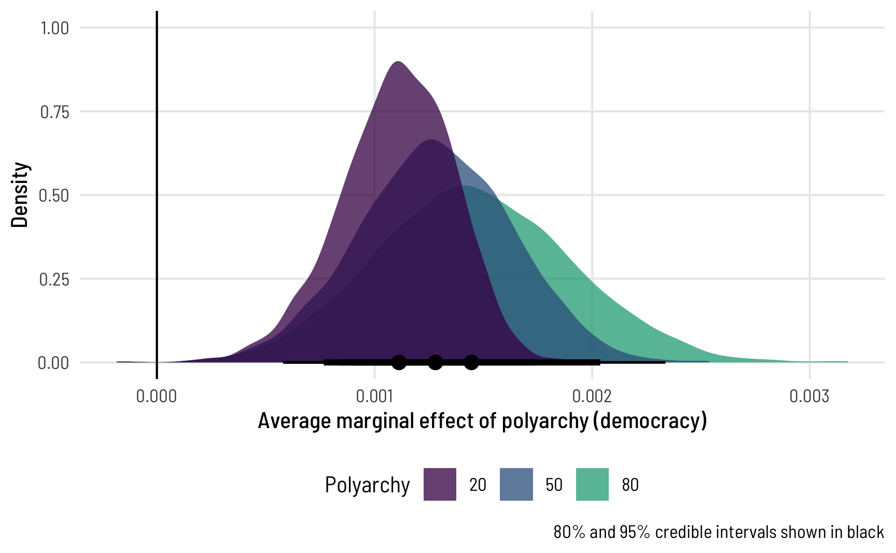
To me this is absolutely incredible! Check out how the shapes of these distributions change as polyarchy increases! That’s because we modeled both the \(\mu\) and the \(\phi\) parameters of the beta distribution, so we get to see changes in both the mean and precision of the outcome. Had we left the phi part alone, doing something like phi ~ 1, the marginal effect would look the same and would just be shifted to the right.
4: Zero-inflated beta regression, Bayesian style
Beta regression is really neat and modeling different components of the beta regression is a fascinating and rich way of thinking about the outcome variable. Plus the beta distribution naturally limits the outcome to the 0–1 range, so you don’t have to shoehorn the data into an OLS-based LPM or fractional logistic model.
One problem with beta regression, though, is that the beta distribution does not include 0 and 1. As we saw earlier, if your data has has 0s or 1s, the model breaks.
A new parameter for modeling the zero process
To get around this, we can use a special zero-inflated beta regression. We’ll still model the \(\mu\) and \(\phi\) (or mean and precision) of the beta distribution, but we’ll also model one new special parameter \(\alpha\). With zero-inflated regression, we’re actually modelling a mixture of data-generating processes:
- A logistic regression model that predicts if an outcome is 0 or not, defined by \(\alpha\)
- A beta regression model that predicts if an outcome is between 0 and 1 if it’s not zero, defined by \(\mu\) and \(\phi\)
Let’s see how many zeros we have in the data:
vdem_2015 %>%
count(prop_fem == 0) %>%
mutate(prop = n / sum(n))
## prop_fem == 0 n prop
## 1 FALSE 169 0.9826
## 2 TRUE 3 0.0174Hahahaha only 3, or 1.7% of the data. That’s barely anything. Perhaps our approach of just adding a tiny amount to those three 0 observations is fine. For the sake of illustrating this approach, though, we’ll still model the zero-creating process.
The only difference between regular beta regression and zero-inflated regression is that we have to specify one more parameter: zi. This corresponds to the \(\alpha\) parameter and determines the zero/not-zero process.
To help with the intuition, we’ll first run a model where we don’t actually define a model for zi—it’ll just return the intercept for the \(\alpha\) parameter.
model_beta_zi_int_only <- brm(
bf(prop_fem ~ quota,
phi ~ quota,
zi ~ 1),
data = vdem_clean,
family = zero_inflated_beta(),
chains = 4, iter = 2000, warmup = 1000,
cores = 4, seed = 1234,
backend = "cmdstanr"
)
## Start samplingtidy(model_beta_zi_int_only, effects = "fixed")
## # A tibble: 5 × 7
## effect component term estimate std.error conf.low conf.high
## <chr> <chr> <chr> <dbl> <dbl> <dbl> <dbl>
## 1 fixed cond (Intercept) -1.44 0.0227 -1.49 -1.40
## 2 fixed cond phi_(Intercept) 2.40 0.0430 2.32 2.48
## 3 fixed zi (Intercept) -4.04 0.187 -4.43 -3.68
## 4 fixed cond quotaTRUE 0.360 0.0328 0.294 0.424
## 5 fixed cond phi_quotaTRUE 0.232 0.0688 0.100 0.365As before, the parameters for \(\mu\) ((Intercept) and quotaTRUE) are on the logit scale, while the parameters for \(\phi\) (phi_(Intercept) and phi_quotaTRUE) are on the log scale. The zero-inflated parameter (or \(\alpha\)) here ((Intercept) for the zi component) is on the logit scale like the regular model coefficients. That means we can back-transform it with plogis():
zi_intercept <- tidy(model_beta_zi_int_only, effects = "fixed") %>%
filter(component == "zi", term == "(Intercept)") %>%
pull(estimate)
# Logit scale intercept
zi_intercept
## b_zi_Intercept
## -4.04
# Transformed to a probability/proportion
plogis(zi_intercept)
## b_zi_Intercept
## 0.0173After transforming the intercept to a probability/proportion, we can see that it’s 1.73%—exactly the same as the proportion of zeros in the data!
Right now, all we’ve modeled is the overall proportion of 0s. We haven’t modeled what determines those zeros. We can see that if we plot the posterior predictions for prop_fem across quota, highlighting predicted values that are 0. In general, ≈2% of the predicted outcomes should be zero, and since we didn’t really model zi, the 0s should be equally spread across the different levels of quota. To visualize this we’ll use a histogram instead of a density plot so that we can better see the count of 0s. We’ll also cheat a little and make the 0s a negative number so that the histogram bin for the 0s appears outside of the main 0–1 range.
beta_zi_pred_int <- model_beta_zi_int_only %>%
predicted_draws(newdata = tibble(quota = c(FALSE, TRUE))) %>%
mutate(is_zero = .prediction == 0,
.prediction = ifelse(is_zero, .prediction - 0.01, .prediction))
ggplot(beta_zi_pred_int, aes(x = .prediction)) +
geom_histogram(aes(fill = is_zero), binwidth = 0.025,
boundary = 0, color = "white") +
geom_vline(xintercept = 0) +
scale_fill_viridis_d(option = "plasma", end = 0.5,
guide = guide_legend(reverse = TRUE)) +
labs(x = "Predicted proportion of women in parliament",
y = "Count", fill = "Is zero?") +
facet_wrap(vars(quota), ncol = 2,
labeller = labeller(quota = c(`TRUE` = "Quota",
`FALSE` = "No Quota"))) +
theme_clean() +
theme(legend.position = "bottom")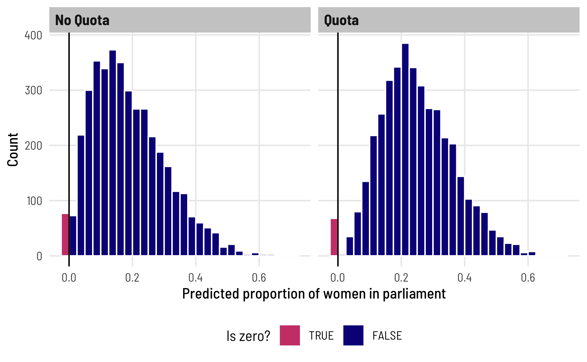
The process for deciding 0/not 0 is probably determined by different political and social factors, though. It’s likely that having a quota, for instance, should increase the probability of having at least one woman. There are probably a host of other factors—if we were doing this in real life, we could fully specify a model that explains the no women vs. at-least-one-woman split. For now, we’ll just use quota, though (in part because there are actually only 3 zeros!). This model takes a little longer to run because of all the moving parts:
model_beta_zi <- brm(
bf(prop_fem ~ quota,
phi ~ quota,
zi ~ quota),
data = vdem_clean,
family = zero_inflated_beta(),
chains = 4, iter = 2000, warmup = 1000,
cores = 4, seed = 1234,
backend = "cmdstanr"
)
## Start samplingtidy(model_beta_zi, effects = "fixed")
## # A tibble: 6 × 7
## effect component term estimate std.error conf.low conf.high
## <chr> <chr> <chr> <dbl> <dbl> <dbl> <dbl>
## 1 fixed cond (Intercept) -1.44 0.0230 -1.49 -1.40
## 2 fixed cond phi_(Intercept) 2.40 0.0434 2.31 2.48
## 3 fixed zi (Intercept) -3.57 0.186 -3.95 -3.22
## 4 fixed cond quotaTRUE 0.359 0.0329 0.295 0.422
## 5 fixed cond phi_quotaTRUE 0.233 0.0700 0.0986 0.374
## 6 fixed zi quotaTRUE -5.64 3.10 -13.3 -2.04We now have two estimates for the zi part: an intercept and a coefficient for quota. Since these are on the logit scale, we can combine them mathematically to figure out the marginal effect of quota on the probability of being 0:
zi_intercept <- tidy(model_beta_zi, effects = "fixed") %>%
filter(component == "zi", term == "(Intercept)") %>%
pull(estimate)
zi_quota <- tidy(model_beta_zi, effects = "fixed") %>%
filter(component == "zi", term == "quotaTRUE") %>%
pull(estimate)
plogis(zi_intercept + zi_quota) - plogis(zi_intercept)
## b_zi_Intercept
## -0.0274Based on this, having a quota reduces the proportion of 0s in the data by 2.7 percentage points. Unsurprisingly, we can also see this in the posterior predictions. We can look at the predicted proportion of 0s across the two levels of quota to find the marginal effect of having a quota on the 0/not 0 split. To do this with tidybayes, we can use the dpar argument in epred_draws() to also calculated the predicted zero-inflation part of the model (this is omitted by default). Here’s what that looks like:
pred_beta_zi <- model_beta_zi %>%
epred_draws(newdata = expand_grid(quota = c(FALSE, TRUE)),
dpar = "zi")
# We now have columns for the overall prediction (.epred) and for the
# zero-inflation probability (zi)
head(pred_beta_zi)
## # A tibble: 6 × 7
## # Groups: quota, .row [1]
## quota .row .chain .iteration .draw .epred zi
## <lgl> <int> <int> <int> <int> <dbl> <dbl>
## 1 FALSE 1 NA NA 1 0.187 0.0276
## 2 FALSE 1 NA NA 2 0.185 0.0260
## 3 FALSE 1 NA NA 3 0.183 0.0385
## 4 FALSE 1 NA NA 4 0.190 0.0305
## 5 FALSE 1 NA NA 5 0.190 0.0295
## 6 FALSE 1 NA NA 6 0.187 0.0211
# Look at the average zero-inflation probability across quota
pred_beta_zi %>%
group_by(quota) %>%
summarize(avg_zi = mean(zi)) %>%
mutate(diff = avg_zi - lag(avg_zi))
## # A tibble: 2 × 3
## quota avg_zi diff
## <lgl> <dbl> <dbl>
## 1 FALSE 0.0279 NA
## 2 TRUE 0.000610 -0.0273Without even plotting this, we can see a neat trend. When there’s not a quota, ≈2.5% of the the predicted values are 0; when there is a quota, almost none of the predicted values are 0. Having a quota almost completely eliminates the possibility of having no women MPs. It’s the same marginal effect that we found with plogis()—the proportion of zeros drops by 2.7 percentage points when there’s a quota.
We can visualize this uncertainty by plotting the posterior predictions. We could either plot two distributions (for quota being TRUE or FALSE), or we can calculate the difference between quota/no quota to find the average marginal effect of having a quota on the proportion of 0s in the data:
mfx_quota_zi <- pred_beta_zi %>%
ungroup() %>%
select(-.row, -.epred, -.chain, -.iteration) %>%
pivot_wider(names_from = "quota", values_from = "zi") %>%
mutate(zi_quota_effect = `TRUE` - `FALSE`)
ggplot(mfx_quota_zi, aes(x = zi_quota_effect)) +
stat_halfeye(.width = c(0.8, 0.95), point_interval = "median_hdi",
fill = "#fb9e07") +
labs(x = "Average marginal effect of having a gender-based quota\non the proportion of countries with zero women in parliament",
y = NULL, caption = "80% and 95% credible intervals shown in black") +
theme_clean()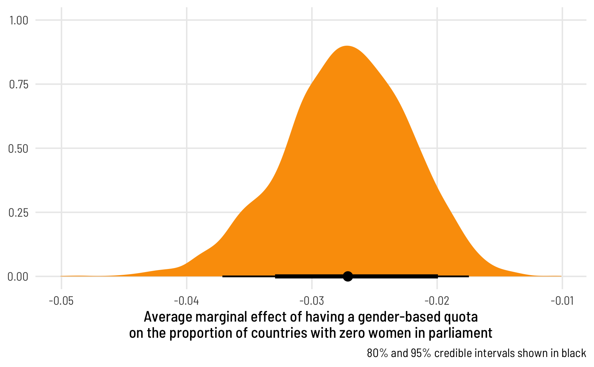
Finally, we can see how this shows up in the overall predictions from the model. Note how there are a bunch of 0s when quota is FALSE, and no 0s when it is TRUE, as expected:
beta_zi_pred <- model_beta_zi %>%
predicted_draws(newdata = tibble(quota = c(FALSE, TRUE))) %>%
mutate(is_zero = .prediction == 0,
.prediction = ifelse(is_zero, .prediction - 0.01, .prediction))
ggplot(beta_zi_pred, aes(x = .prediction)) +
geom_histogram(aes(fill = is_zero), binwidth = 0.025,
boundary = 0, color = "white") +
geom_vline(xintercept = 0) +
scale_fill_viridis_d(option = "plasma", end = 0.5,
guide = guide_legend(reverse = TRUE)) +
labs(x = "Predicted proportion of women in parliament",
y = "Count", fill = "Is zero?") +
facet_wrap(vars(quota), ncol = 2,
labeller = labeller(quota = c(`TRUE` = "Quota",
`FALSE` = "No Quota"))) +
theme_clean() +
theme(legend.position = "bottom")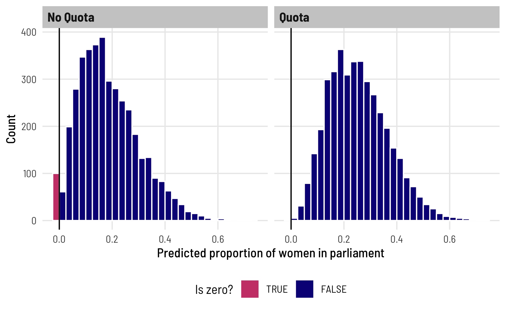
Again, I think it’s so cool that we can explore all this uncertainty for specific parameters of this model, like the 0/not 0 process! You can’t do this with OLS!
Average marginal effects, incorporating the zero process
The main thing we’re interested in here, though, is the average marginal effect of having a quota on the proportion of women in parliament, not just the 0/not 0 process. Since we’ve incorporated quota in all the different parts of the model (the \(\mu\), the \(\phi\), and the zero-inflated \(\alpha\)), we should definitely once again simulate this value using tidybayes and emmeans—trying to get all the coefficients put together manually is going to be too tricky.
ame_beta_zi <- model_beta_zi %>%
emmeans(~ quota, regrid = "response") %>%
contrast(method = "revpairwise") %>%
gather_emmeans_draws()
ame_beta_zi %>% median_hdi()
## # A tibble: 1 × 7
## contrast .value .lower .upper .width .point .interval
## <chr> <dbl> <dbl> <dbl> <dbl> <chr> <chr>
## 1 TRUE - FALSE 0.0617 0.0504 0.0721 0.95 median hdi
ggplot(ame_beta_zi, aes(x = .value)) +
stat_halfeye(.width = c(0.8, 0.95), point_interval = "median_hdi",
fill = "#bc3032") +
labs(x = "Average marginal effect of having a gender-based\nquota on the proportion of women in parliament", y = NULL,
caption = "80% and 95% credible intervals shown in black") +
theme_clean()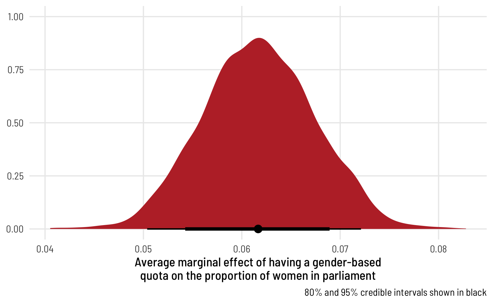
The average marginal effect of having a quota on the proportion of women MPs in an average country, therefore, is 6.65 percentage points.
Special case #1: Zero-one-inflated beta regression
With our data here, no countries have parliaments with 100% women (cue that RBG “when there are nine” quote). But what if you have both 0s and 1s in your outcome? Zero-inflated beta regression handles the zeros just fine (it’s in the name of the model!), but it can’t handle both 0s and 1s.
Fortunately there’s a variation for zero-one-inflated beta (ZOIB) regression. I won’t go into the details here—Matti Vuore has a phenomenal tutorial about how to run these models. In short, ZOIB regression makes you model a mixture of three things:
- A logistic regression model that predicts if an outcome is either 0 or 1 or not 0 or 1, defined by \(\alpha\) (or alternatively, a model that predicts if outcomes are extreme (0 or 1) or not (between 0 and 1); thanks to Isabella Ghement for this way of thinking about it!)
- A logistic regression model that predicts if any of the 0 or 1 outcomes are actually 1s, defined by \(\gamma\) (or alternatively, a model that predicts if the extreme values are 1)
- A beta regression model that predicts if an outcome is between 0 and 1 if it’s not zero or not one, defined by \(\mu\) and \(\phi\) (or alternatively, a model that predicts the non-extreme (0 or 1) values)
When using brms, you get to model all these different parts:
brm(
bf(
outcome ~ covariates, # The mean of the 0-1 values, or mu
phi ~ covariates, # The precision of the 0-1 values, or phi
zoi ~ covariates, # The zero-or-one-inflated part, or alpha
coi ~ covariates # The one-inflated part, conditional on the 0s, or gamma
),
data = whatever,
family = zero_one_inflated_beta(),
...
)Pulling out all these different parameters, plotting their distributions, and estimating their average marginal effects looks exactly the same as what we did earlier with the zero-inflated model—all the brms, tidybayes, and emmeans functions we used for marginal effects and fancy plots work the same. All the coefficients are on the logit scale, except \(\phi\), which is on the log scale.
Special case #2: One-inflated beta regression
What if your proportion-based outcome has a bunch of 1s and no 0s? It would be neat if there were a one_inflated_beta() family, but there’s not (also by design). But never fear! There are two ways to do one-inflated regression:
Reverse your outcome so that it’s
1 - outcomeinstead ofoutcomeand then use zero-inflated regression. In the case of the proportion of women MPs, we would instead look at the proportion of not-women MPs:mutate(prop_not_fem = 1 - prop_fem)Use zero-one-inflated beta regression and force the conditional one parameter (
coi, or the \(\gamma\) in that model) to be one, meaning that 100% of the 0/not 0 splits would actually be 1:bf(..., coi = 1)
Everything else that we’ve explored in this post—posterior predictions, average marginal effects, etc.—will all work as expected.
Super fancy detailed model with lots of moving parts, just for fun
Throughout this post, for the sake of simplicity we’ve really only used one or two covariates at a time (quota and/or polyarchy). Real world models are more complex: we can use more covariates, multilevel hierarchical structures, or weighting, for instance. This all works just fine with zero|one|zero-one-inflated beta regression thanks to the power of brms, which handles all these extra features natively.
Just for fun here at the end, let’s run a more fully specified model with more covariates and a multilevel structure that accounts for year and region. This will let us look at the larger V-Dem dataset from 2010–2020 instead of just 2015.
Set better priors
To make sure this runs as efficiently as possible, we’ll set our own priors instead of relying on the default brms priors. This is especially important for beta models because of how parameters are used internally. Remember that most of our coefficients are on a logit scale, and those logits correspond to probabilities or proportions. While logits can theoretically range from −∞ to ∞, in practice they’re a lot more limited. For instance, we can convert some small percentages to the logit scale with qlogis():
qlogis(c(0.01, 0.001, 0.0001))
## [1] -4.60 -6.91 -9.21
qlogis(c(0.99, 0.999, 0.9999))
## [1] 4.60 6.91 9.21A 1%/99% value is 4.6 as a logit, while 0.01%/99.99% is 9. Most of the proportions we’ve seen in the models so far are much smaller than that—logits of like ≈0–2 at most. By default, brms puts a flat prior on coefficients in beta regression, so values like 10 or 15 could occur, which are excessively massive when converted to probabilities! Look at this plot to see the relationship between the logit scale and the probability scale—there are big changes in probability between −4ish and 4ish, but once you start getting into the 5s and beyond, the probability is all essentially the same.
tibble(x = seq(-8, 8, by = 0.1)) %>%
mutate(y = plogis(x)) %>%
ggplot(aes(x = x, y = y)) +
geom_line(size = 1) +
labs(x = "Logit scale", y = "Probability scale") +
theme_clean()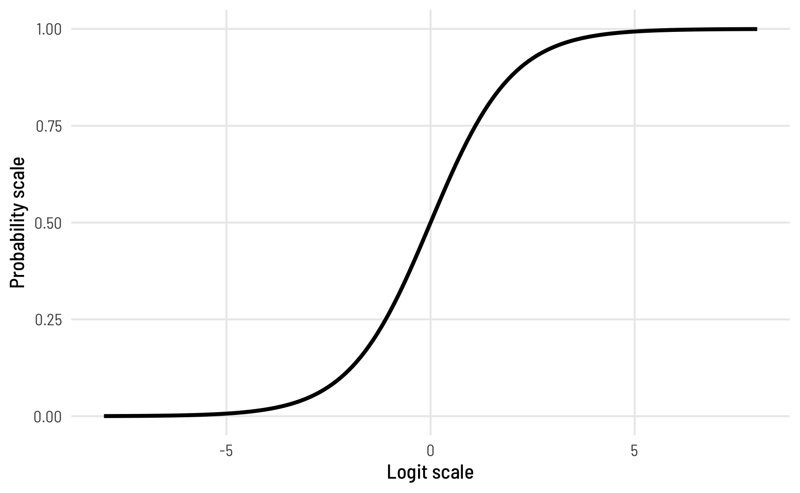
To help speed up the model (and on philosophical grounds, since we know prior information about these model coefficients), we should tell brms that the logit-scale parameters in the model aren’t ever going to get huge.
To do this, we first need to define the formula for our fancy complex model. I added a bunch of plausible covariates to different portions of the model, along with random effects for year and region. In real life this should all be driven by theory.
vdem_clean <- vdem_clean %>%
# Scale polyarchy back down to 0-1 values to help Stan with modeling
mutate(polyarchy = polyarchy / 100) %>%
# Make region and year factors instead of numbers
mutate(region = factor(region),
year = factor(year))
# Create the model formula
fancy_formula <- bf(
# mu (mean) part
prop_fem ~ quota + polyarchy + corruption +
civil_liberties + (1 | year) + (1 | region),
# phi (precision) part
phi ~ quota + (1 | year) + (1 | region),
# alpha (zero-inflation) part
zi ~ quota + polyarchy + (1 | year) + (1 | region)
)We can then feed that formula to get_prior() to see what the default priors are and how to change them:
get_prior(
fancy_formula,
data = vdem_clean,
family = zero_inflated_beta()
)
## prior class coef group resp dpar nlpar lb ub source
## (flat) b default
## (flat) b civil_liberties (vectorized)
## (flat) b corruption (vectorized)
## (flat) b polyarchy (vectorized)
## (flat) b quotaTRUE (vectorized)
## student_t(3, 0, 2.5) Intercept default
## student_t(3, 0, 2.5) sd 0 default
## student_t(3, 0, 2.5) sd region 0 (vectorized)
## student_t(3, 0, 2.5) sd Intercept region 0 (vectorized)
## student_t(3, 0, 2.5) sd year 0 (vectorized)
## student_t(3, 0, 2.5) sd Intercept year 0 (vectorized)
## (flat) b phi default
## (flat) b quotaTRUE phi (vectorized)
## student_t(3, 0, 2.5) Intercept phi default
## student_t(3, 0, 2.5) sd phi 0 default
## student_t(3, 0, 2.5) sd region phi 0 (vectorized)
## student_t(3, 0, 2.5) sd Intercept region phi 0 (vectorized)
## student_t(3, 0, 2.5) sd year phi 0 (vectorized)
## student_t(3, 0, 2.5) sd Intercept year phi 0 (vectorized)
## (flat) b zi default
## (flat) b polyarchy zi (vectorized)
## (flat) b quotaTRUE zi (vectorized)
## logistic(0, 1) Intercept zi default
## student_t(3, 0, 2.5) sd zi 0 default
## student_t(3, 0, 2.5) sd region zi 0 (vectorized)
## student_t(3, 0, 2.5) sd Intercept region zi 0 (vectorized)
## student_t(3, 0, 2.5) sd year zi 0 (vectorized)
## student_t(3, 0, 2.5) sd Intercept year zi 0 (vectorized)There are a ton of potential priors we can set here! If we really wanted, we could set the mean and standard deviation separately for each individual coefficient, but that’s probably excessive for this case.
You can see that everything with class b (for β coefficient in a regression model) has a flat prior. We need to narrow that down, perhaps with something like a normal distribution centered at 0 with a standard deviation of 1. Values here won’t get too big and will mostly be between −2 and 2:
ggplot(data = tibble(x = -4:4), aes(x = x)) +
geom_function(fun = dnorm, args = list(mean = 0, sd = 1), size = 1) +
theme_clean()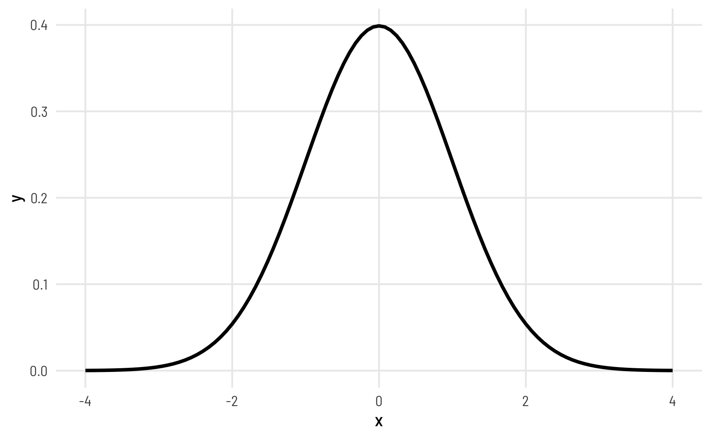
To set the priors, we can create a list of priors as a separate object that we can then feed to the main brm() function. We’ll keep the default prior for the intercepts.
priors <- c(set_prior("student_t(3, 0, 2.5)", class = "Intercept"),
set_prior("normal(0, 1)", class = "b"))Run the model
Let’s run the model! This will probably take a (long!) while to run. On my new 2021 MacBook Pro with a 10-core M1 Max CPU, running 4 chains with two CPU cores per chain (with cmdstanr’s support for within-chain threading) takes about 3 minutes. It probably takes a lot longer on a less powerful machine. To help Stan with estimation, I also set inits to help with some of the parameters of the beta distribution, and increased adapt_delta and max_treedepth a little. I only knew to do this because Stan complained when I used the defaults and told me to increase them :)
fancy_model <- brm(
fancy_formula,
data = vdem_clean,
family = zero_inflated_beta(),
prior = priors,
inits = "0",
control = list(adapt_delta = 0.91,
max_treedepth = 11),
chains = 4, iter = 2000, warmup = 1000,
cores = 4, seed = 1234,
threads = threading(2),
backend = "cmdstanr"
)
## Start sampling
## Warning: 560 of 4000 (14.0%) transitions ended with a divergence.
## See https://mc-stan.org/misc/warnings for details.There are a handful of divergent chains, and one that hit the maximum treedepth when exploring the posterior, but since this isn’t an actual model that I’d use in a publication, I’m not too worried. In real life, I’d increase the adapt_delta or max_treedepth parameters even more or do some other fine tuning, but we’ll just live with the warnings for now.
Analyze and plot the results
We now have a fully specified multilevel model with all sorts of rich moving parts: we account for the mean and precision of the beta distribution and we account for the zero-inflation process, all with different covariates with nested levels for year and region. Here are the full results, with medians and 95% credible intervals for all the different coefficients:
tidy(fancy_model)
## # A tibble: 16 × 8
## effect component group term estimate std.error conf.low conf.high
## <chr> <chr> <chr> <chr> <dbl> <dbl> <dbl> <dbl>
## 1 fixed cond <NA> (Intercept) -0.579 0.229 -1.03 -0.152
## 2 fixed cond <NA> phi_(Intercept) 2.84 0.238 2.32 3.32
## 3 fixed zi <NA> (Intercept) 0.425 5.15 -6.42 10.9
## 4 fixed cond <NA> quotaTRUE 0.416 0.0283 0.358 0.473
## 5 fixed cond <NA> polyarchy -0.209 0.149 -0.468 0.0911
## 6 fixed cond <NA> corruption -0.803 0.0706 -0.948 -0.672
## 7 fixed cond <NA> civil_liberties -0.525 0.149 -0.799 -0.285
## 8 fixed cond <NA> phi_quotaTRUE -0.0557 0.0744 -0.206 0.0948
## 9 fixed zi <NA> quotaTRUE -9.85 8.81 -29.8 -2.26
## 10 fixed zi <NA> polyarchy -0.0584 0.986 -1.87 1.94
## 11 ran_pars cond region sd__(Intercept) 0.515 0.230 0.249 1.06
## 12 ran_pars cond year sd__(Intercept) 0.0785 0.0291 0.0366 0.148
## 13 ran_pars cond region sd__phi_(Intercept) 0.605 0.291 0.273 1.29
## 14 ran_pars cond year sd__phi_(Intercept) 0.0320 0.0320 0.00109 0.113
## 15 ran_pars zi region sd__(Intercept) 13.7 14.8 2.00 49.5
## 16 ran_pars zi year sd__(Intercept) 0.182 0.164 0.00807 0.610We can’t really interpret any of these coefficients directly, since (1) they’re on different scales (the phi parts are all logged; all the other parts are logits), and (2) we need to combine coefficients with intercepts in order to back-transform them into percentage point values, and doing that mathematically is tricky.
We’ll focus on finding the marginal effect of quota, since that’s the main question we’ve been exploring throughout this post (and it was the subject of the original Tripp and Kang (2008) paper). For fun, we’ll also look at polyarchy, since it’s a continuous variable.
The combination of tidybayes and emmeans makes it really easy to get posterior predictions of the difference between quota and no quota. We need to set a couple extra arguments in emmeans(), which then get passed on to brms’s predicition functions. First, we have to tell it to return predictions from the expected values of the posterior (i.e. accounting for all the moving parts; regular prediction just looks at the coefficient in isolation) with epred = TRUE (doing this automatically returns predictions on the response scale (i.e. probabilities), so we can remove regrid = "response"). Next we need to tell it which of the group-levelrandom effects to incorporate into the predictions with the re_formula argument. By default, no group-level effects are included. If we use re_formula = NULL, all group-level effects (i.e. year and region) will be included.
ame_fancy_zi_quota <- fancy_model %>%
emmeans(~ quota,
epred = TRUE,
re_formula = NULL) %>%
contrast(method = "revpairwise") %>%
gather_emmeans_draws()
ame_fancy_zi_quota %>% median_hdi()
## # A tibble: 1 × 7
## contrast .value .lower .upper .width .point .interval
## <chr> <dbl> <dbl> <dbl> <dbl> <chr> <chr>
## 1 TRUE - FALSE 0.0743 0.0637 0.0833 0.95 median hdi
ggplot(ame_fancy_zi_quota, aes(x = .value)) +
stat_halfeye(.width = c(0.8, 0.95), point_interval = "median_hdi",
fill = "#bc3032") +
labs(x = "Average marginal effect of having a gender-based\nquota on the proportion of women in parliament", y = NULL,
caption = "80% and 95% credible intervals shown in black") +
theme_clean()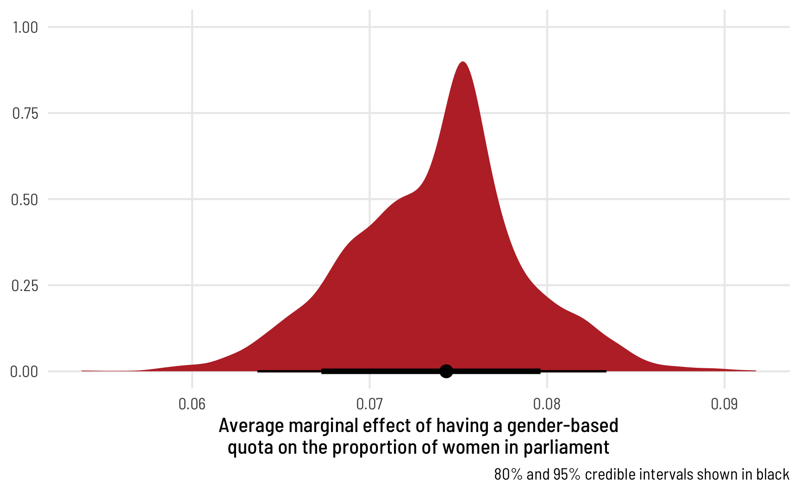
After accounting for democracy, corruption, respect for civil liberties, year, and region, the proportion of women MPs in countries with a parliamentary gender quota is 7.7 percentage points higher than in countries without a quota, on average, with a 95% credible interval ranging from 6.7 to 8.7 percentage points.
For fun, we can look at how the predicted outcome changes across both polyarchy and quota simultaneously. Because we didn’t use any interaction terms, the slope will be the same across both levels of quota, but the plot still looks neat. Weirdly, due to the constellation of controls we included in the model, the predicted proportion of women MPs decreases with more democracy. But that’s not super important—if we were really only interested in the quota effect and we had included a sufficient set of variables to close backdoor paths, the coefficients for all other variables shouldn’t be interpreted (Keele, Stevenson, and Elwert 2020). We’ll pretend that’s the case here—this code mostly just shows how you can do all sorts of neat stuff with emmeans().
ame_fancy_zi_polyarchy_quota <- fancy_model %>%
emmeans(~ quota + polyarchy,
at = list(polyarchy = seq(0, 1, by = 0.1)),
epred = TRUE,
re_formula = NULL) %>%
gather_emmeans_draws()
ggplot(ame_fancy_zi_polyarchy_quota,
aes(x = polyarchy, y = .value, color = quota, fill = quota)) +
stat_lineribbon(aes(fill_ramp = stat(level))) +
scale_fill_viridis_d(option = "plasma", end = 0.8) +
scale_color_viridis_d(option = "plasma", end = 0.8) +
scale_fill_ramp_discrete(range = c(0.2, 0.7)) +
facet_wrap(vars(quota), ncol = 2,
labeller = labeller(quota = c(`TRUE` = "Quota",
`FALSE` = "No Quota"))) +
labs(x = "Polyarchy (democracy)",
y = "Predicted proportion of women MPs",
fill = "Quota", color = "Quota",
fill_ramp = "Credible interval") +
theme_clean() +
theme(legend.position = "bottom")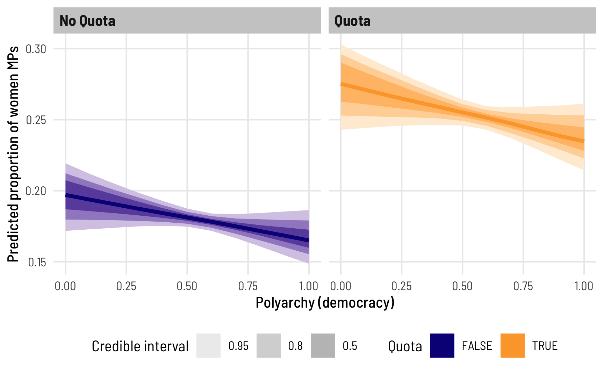
References
Keele, Luke, Randolph T. Stevenson, and Felix Elwert. 2020. “The Causal Interpretation of Estimated Associations in Regression Models.” Political Science Research and Methods 8 (1): 1–13. https://doi.org/10.1017/psrm.2019.31.
Kneib, Thomas, Alexander Silbersdorff, and Benjamin Säfken. 2021. “Rage Against the Mean—a Review of Distributional Regression Approaches.” Econometrics and Statistics. https://doi.org/10.1016/j.ecosta.2021.07.006.
Tripp, Aili Mari, and Alice Kang. 2008. “The Global Impact of Quotas: On the Fast Track to Increased Female Legislative Representation.” Comparative Political Studies 41 (3): 338–61. https://doi.org/10.1177/0010414006297342.